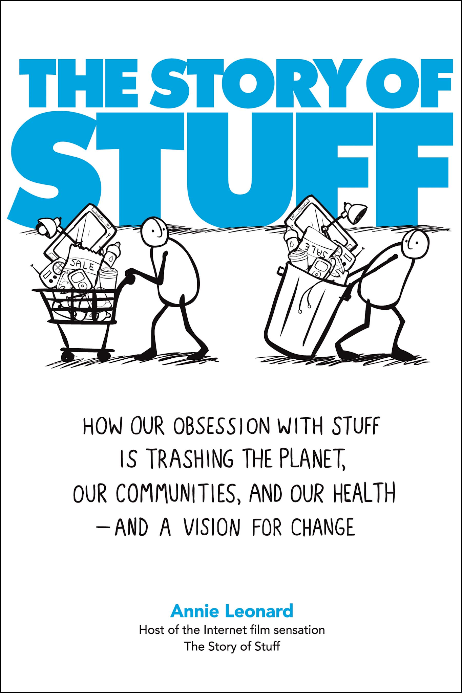
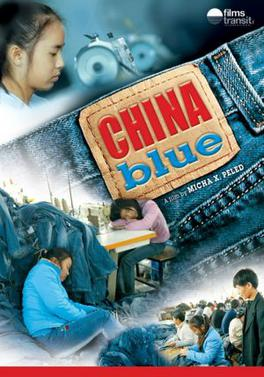
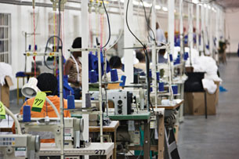
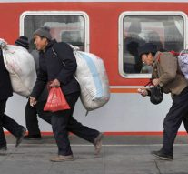

Consider quality of life, human rights, democracy, global awareness, participation, civic responsibility, activism, and personal responses to globalization.
I can...
explain how these lessons connect to To what extent should I, as a citizen, respond to globalization?
analyze sources for perspective, evidence, bias, and assumptions about globalization.
collect evidence from lessons and resources to support a defensible position.
refine my thinking into a clear Social Studies 10-1 position response.
To what extent should you, as a citizen, respond to globalization?
In this unit, you will look at how citizens respond to an increasingly connected and interdependent world. Global events and how others live their lives are no longer remote and too distant for us to be aware of or affected by in some way. Some people consider themselves to be global citizens, not just citizens of a country. The influence and impacts of globalization create opportunities and challenges that demand effective and innovative responses from global citizens for the prosperity of all citizens. How do you act as a global citizen? What does it mean to be informed, engaged, responsible, and active citizens?
Taking an active role as a global citizen can mean many things and include many activities. What are some ways in which you can be an active responsible citizen in a globalizing world? How do your daily activities reflect your thinking as a global citizen. How should I, as a citizen, respond to globalization?
Throughout your exploration of globalization, you have discovered how people around the world are interconnected. In the past and today, people are citizens of their local village, city, province, and country. Most people have rights and responsibilities that go along with their citizenship. Today, people have ties to others all around the world. What does it mean to be a “global citizen”? Are there rights and responsibilities that go along with having a sense of belonging to a global community? In combination with the previous units, this unit will help you answer the issue question for this course: To what extent should we embrace globalization?
Key Terms
Below are the key vocabulary terms you will want to understand in this unit.
Use this podcast before the lesson questions. Listen for details that help answer the related issue question: To what extent should I, as a citizen, respond to globalization?
Global Apathy Podcast
Podcast companion for Global Apathy. Use it to connect media evidence back to To what extent should I, as a citizen, respond to globalization?
Please read Chapter 15, pages 319-326 in your Perspectives on Globalization textbook.
Quality of life is a term used to describe how good a person's life is. It includes health, wealth, happiness, freedom, equality, personal satisfaction, and love of family and friends. Click here to view a powerpoint presentation about quality of life.
Media
Watch the following video on Quality of Life. What matters to you when you consider your quality of life?
Ideas about what makes up a good quality of life vary because every human being is different.
Your quality of life is based on many factors. Some of them include the following:
friends
money
respect
family life
clean water
personal safety
a sense of hope
emotional security
access to education
a good place to live
nutritious food to eat
affordable health care
freedom to act on your own beliefs
freedom to make your own choices
parents or other adults who care about you
freedom to practice your chosen religion or spirituality
Factors that Contribute to Quality of Life
Multiple Perspectives
Quality of life has different meanings for different individuals and it may mean something different from one culture to another.
Compare these images. From looking at details in the images, which person do you think has a greater quality of life? What details from the photo would support your answer?
Read more about each of the people in the photos.
Photo 1: Anil is a 48-year-old grandmother. She lives in a one-bedroom concrete apartment with her son and daughter-in-law and their four children. She is responsible for all the cooking and child care in her household. Her son has recently completed a training program and just got a job at a call centre. Anil describes her life in the following way: “Living with my son and grandchildren gives me great joy. Even though we don’t have much, we always have enough to eat, a roof over our heads, and love in our hearts. My son says with his new job, we will be able to move into a larger house, but I hope it doesn’t mean that he will have to work so much that we can’t see him every day.”
Photo 2: Thomas is an executive at a large international firm. He makes over $200 000 per year. He works 70 hours a week, often travelling around the world. He’s been married three times and has two children who live in another city far away. Thomas describes his life in the following way: “My life is hectic, but I think I am very successful. My personal life might be happier if I spent less time at work, but that is a choice I made.”
Photo 3: William was laid off from his job at an automobile plant when it shut down to outsource production to Mexico. He’s experienced problems with drugs and alcohol and no longer sees anyone in his family, although he is part of a larger community of homeless people in his city. William says, “I’m surviving, but that’s about it. It’s tough to rely on the kindness of complete strangers in order to get by, but I have good friends and that helps.”
Have your ideas about the people in the photos changed? What role has globalization played in the quality of life of these three people?
Quality of life varies greatly from one place to another, no matter how you look at it.
In many parts of the world, people struggle just to get enough food to survive. They have very few opportunities for an education; their lifespan is short and their children often die before they turn five. In many nations, women do not have the same rights as men. In other nations, children are forced to work just so the family can get enough to eat. In some parts of the world, oppressive governments do not allow people to travel freely, to speak out against injustice, to be safe, or to vote.
In Canada, people are often required to work long hours to keep their jobs. Work in some jobs can be physically and mentally challenging. Mental health issues, homelessness, and substance abuse are quality-of-life issues that are faced by many Canadians.
How do you know what kind of quality of life people have all over the world? One indicator is called the Human Development Index (HDI).
The Human Development Index provides some information about overall quality of life, but it doesn’t describe the differences between individuals within countries. In any country, there can be rich and poor, sick and healthy, happy and sad people.
This map shows the nations of the world based on their Human Development Index rating. Green countries have a high rating, yellow is moderate, and red is poor.
Advantages/Disadvantages of methods of measuring quality of life
Do you think it is possible to have one global standard to rate people’s wellbeing?
Canadians and Quality of Life
Canada consistently scores high up on the Human Development Index. Do you, as a Canadian, have a high quality of life? In what ways has globalization created a disparity among Canadians?
Canada’s reputation as a developed country with one of the highest levels of quality of life can be misleading. Not every Canadian enjoys the quality of life for which Canada is well known. A disparity (a condition of a country’s inequality in natural resources, literacy rate, life expectancy, international disputes, and earned income in comparison to a more prosperous country) in quality of life exists between Canadians. This inequality among Canadians has various causes.
The United Nations has expressed concerns over the poor quality of life of many Aboriginal peoples in Canada. In 2008 the federal government recognized that much of the economic, political, and social struggles of Aboriginal peoples in Canada are rooted in historical actions such as the past government-supported placement of Aboriginal children in residential schools.
How are human rights and quality of life connected?
According to the dictionary, human rights are “the rights that are considered by most societies to belong automatically to everyone.” But what are those rights? What fundamental rights should be guaranteed to every person? Should men and women have different rights? Should children have the same rights as adults? Should newcomers to Canada have the same rights as long-term Canadian citizens?
“Human rights are what make us human. They are the principles by which we create the sacred home for human dignity. Human rights are what reason requires and conscience commands.”
—Kofi Annan, Secretary-General – United Nations.
Kofi Annan, Secretary-General – United Nations. Excerpt from statement delivered on the 50th anniversary of the Universal Declaration of Human Rights. 10 December 1997 at the University of Tehran.
What factors affect quality of life for women and children?
Reading
Please read Chapter 16, pages 346-351 in your Perspectives on Globalization textbook.
Throughout history, women in many parts of the world have had fewer rights than men. In fact, five Alberta women had to go to court in the late 1920s to have women declared persons! View the CBC archive Women become Persons.
Women's rights have been steadily improving in most of the world over the past several years. As the nations of the world become more connected to each other, women are demanding rights equal to those of women in other countries.
However, understandings of women’s rights have a lot to do with values and perspectives. In some cultures, women have a very different role than men. In most nations, the average woman still does not earn as much as the average man. In many nations, women do not have the same rights in marriage as men do. In some nations, they cannot vote. In others, they cannot dress according to their own judgment. In others, women cannot even leave their homes without being accompanied by a male relative. Some of these "rules" are based on the view that women need to be protected by men.
Some issues with women's rights include
the right to control one's own body
the right to vote and hold office
the right to work for fair wages
the right to own property
the right to an education
rights within marriage
rights as a parent
religious rights
the right to serve in the army
the right to sign legal contracts
Global Challenges and Opportunities for Women
Women on average are paid less than men for the same hours of work.
In some parts of the world, women are forbidden to work outside the home and make their own income. In the global economy, more and more women are working in outsourced industries and related local employment. As the Industrial Revolution showed, when people begin to earn income, they also begin to demand freedom.
Entrepreneurship gives women opportunities to achieve equal rights. When women become entrepreneurs selling their own handicrafts or agricultural produce or starting their own businesses, they can make their own money and become more independent—and demand equal rights.
In many parts of the world, women are not protected by labour laws, which control the hours they are allowed to work, their rates of pay, or the conditions in which they work. Under global pressure from consumers, more countries are establishing better labour laws that protect workers in their operations worldwide.
Women are often underrepresented in government and have less of a role in decision making. As of the last election in Canada, women make up only 26% of parliament.
Women who wish to become politically or socially involved, especially in online spaces, are likely to face repurcussions which may take the form of harassment, threats, or even violence.
it is also important to consider that many women do not only face gender-based discrimination, but also discrimination based on their race, religion, age, orientation, or other factors. For example, Muslim women may be the target of anti-Muslim hate crimes, as cited in the example at the beginning of the article, and women who are lesbian, bisexual, or transgender may be subject to discrimination, violence, or harassment. Recognizing where these different ways one may be marginalized line up is the main principle behind intersectionality.
Women have also been identified as a group in a globalizing world that has yet to universally enjoy the opportunities of globalization. As with children, women are often the labour that drives the efforts to globalize in many developing and less-developed countries. Some people recognize that the future of globalization is dependent on the full economic, political, and social participation and representation of women in the world. Others are concerned that economic globalization limits that participation and representation.
Saudi Arabia enjoys a relatively high quality of life. Access to rights and freedoms for Saudi citizens is dependent on gender and Islamic law. Amnesty International and the United Nations continue to promote action to protect Saudi women and to expand their rights, such as voting, currently held only by Saudi men.
Young People and Quality of Life
Reading
Please read Chapter 16, pages 339-344 in your Perspectives on Globalization textbook.
Should young people have the same human rights as adults? Should they have greater rights? Children have different needs than adults and have fewer abilities to make sure their own rights are protected. They cannot vote, they generally have far less money than adults, and because of their developing physical, mental, and emotional abilities, they are defenseless against exploitation. In some nations, children are used as soldiers, or sold into prostitution, or forced to do dangerous work for little or no pay. These activities limit the ability of children to grow and develop into fully functioning adults.
Watch
Watch this short animation about addressing the problem of child labour in Sri Lanka:
Globally in 2017, there were 152 million child labourers (half that number in hazardous work)
Global distribution - Africa: 72 million; Asia and Pacific: 62 million; Americas: over 10.7 million; Arab States: 1.2 million; Europe and Central Asia: 5.5 million
Even in our society in Canada today, youth are discriminated against in several ways. In fact, discrimination on the basis of age is the only legal form of discrimination.
When young people are not respected, they do not feel engaged in their own society or empowered to make changes. Young adults don’t vote as often as older people, and almost 80 percent of Canadians think that is because they feel that their issues are not addressed and that they do not have a voice.
The United Nations Convention on the Rights of the Child is the first legally binding global agreement to protect the rights of children. It spells out basic human rights for children everywhere with additional optional sections about child soldiers and child pornography and prostitution. The four core principles include
non-discrimination
devotion to the best interests of the child
right to life, survival, and development
respect for the views of the child
By agreeing to the Convention, the countries of the world have promised to protect children's rights and act in the best interests of children. There are 140 nations that have signed this agreement; Canada signed in 1991.
The impacts of globalization are often measured in the amount of prosperity a country has. The sustainability of a country is often connected to the land and environment. Children and youth are neglected resources in many countries. The United Nations has identified children as a valuable resource and that children need to be sustained along with the land and natural resources of this planet.
The relationship between globalization and the well-being of children is intertwined. Children in many developing and less-developed countries are the workers that labour to globalize their country. These children have yet to experience the benefits of globalization. For many global citizens there is a responsibility to act on behalf of all children and stop the damage of globalization to their well-being or to use it to improve that well-being.
Vocabulary
active citizenship: demonstrating interest in and contributing to the well-being of others and the community
engaged citizenship: participation in the issues and decisions that affect others and the community
entrepreneur: somebody who starts his or her own business
global event: a happening that has connections to or impacts on others outside of where it occurred
global citizen: an individual who is committed to actively participate in the achievement of human rights and prosperity for all citizens of the world
human rights: the rights considered by most societies to belong automatically to everyone
intersectionality: the recognition that people may suffer from multiple different forms of marginalization at the same time
informed citizenship: making decisions and taking actions that are based on the recognition of multiple perspectives and background knowledge
labour laws: laws that protect workers
responsible citizenship: making decisions and taking actions that reflect consideration of the impact of these decisions or actions on others
Lesson Summary
In this lesson you further investigated the factors that contribute to a good quality of life. While quality of life may mean different things to different people, most people do not have a good life unless their basic needs are met and they enjoy certain basic rights and freedoms. As the world becomes more globally connected, people may experience changes in their quality of life. These changes can either enrich their lives financially, culturally, and politically, or lead to greater challenges.
Conduct an internet search for the following organizations:
Canadian Coalition for the Rights of Children
Links to information and resources relating to the rights of children in Canada and global citizenship.
National Anti-Poverty Organization link: Youth Initiative
Information and links relating to poverty and youth, the group's campaigns, human rights, news stories, and more.
Free the Children
Homepage of organization dedicated to empowering children and youth through education. Contains blogs on issues affecting world youth, including child labour and exploitation, information about various campaigns and issues, and more.
UNICEF: Voices of Youth
Articles, quotes, interactive games, polls, plus "Digital Diaries" – first-person radio stories from children and youth around the world.
Asia-Pacific Conference On The Use Of Children As Soldiers: Conference Report (2000)
Report on preventing the use of children as soldiers, exploring some underlying factors and offering recommendations for action at community, national, and international levels.
UNICEF(United Nations International Children’s Emergency Fund): an organization established in 1946 originally set up to provide for the well-being of children after the Second World War. Now it is committed to upholding the Convention on the Rights of the Child.)
UNICEF has created a collection of videos and podcasts on issues related to children. These videos are available on the UNICEF website. This non-governmental organization also offers video-on-demand available free through iTunes.
Explore the causes of the issues and the role UNICEF has taken on these global issues.
Use these questions to check your understanding while the lesson is fresh. Your responses save with the rest of your course notes.
Context
In this part of the course you will be a asked to ponder, research and analyse information so you can answer the following questions:
1
What are human rights?
Context
In this part of the course you will be a asked to ponder, research and analyse information so you can answer the following questions: What are human rights?
2
How are ideas about human rights and democracy related?
3
Use a dictionary, your textbook or the internet to understand and record the meanings of each of the following terms.
Context
To what extent should you, as a citizen, respond to globalization? Complete the following questions for inquiry and activities for Chapters 13-16. Answer each question in full sentence answer form (unless stated otherwise), and in as much detail as possible. Chapter 13: To what extent have democracy and human rights shaped-and been shaped by-globalization?
4
Read page 310.
Context
Take point form notes on the Canadian Charter of Rights and Freedoms. Make sure your notes include the seven categories-and provide a brief description of each category. In sentence format, compare and contrast the two Declarations: How are they similar/ how are they different?
5
Analyze the three quotations on page 314. Remember that when analyzing a source; try to put the main idea into your own words and think of the values and policies that the person would support. Last, review your analysis and the figure on page 13-9 and create a mind-map showing how these four items are linked.
6
Explain how cultural imperialism is both different and the same as historical imperialism. (Page 319)
7
List and explain three examples of this (only two are mentioned in the text). Also explain how, on the other hand, the limitations that the Internet has in promoting human rights.
Context
Create a two column chart labeled,” Ripple Effects of Globalization”. Label one column “Challenges “and label the other column “Opportunities. As you read pages 326-328, take point form notes to complete your chart.
8
Examine Figure 14-4 on page 329.
Saved locally
Evidence note
Capture one detail from this lesson that could help answer the issue question.
Do the human rights of people around the world improve with globalization? In this lesson you will consider how your human rights are guaranteed as a Canadian. You will also examine Canada’s role in the protection of human rights around the world. You will investigate the United Nations Declaration of Human Rights as well as some other ways in which globalization has affected human rights around the world.
How does globalization affect human rights?
Itumeleng lives in Maputso, in Lesotho, Africa. Lesotho is a poor country with few natural resources. Most people earn their living from subsistence farming. For the past several years, more and more foreign-owned sportswear companies have opened factories in her town. Sweatshirts and other athletic clothing are made, and most of this material is sold in the United States. Itumeleng considers herself fortunate to get a job at this factory, where her monthly pay in 2008 was about $110 a month. That doesn’t sound like much by Canadian standards, but it is enough to support her, her mother, and her two children.
There are many clothing factories in Lesotho, including those that make clothing sold by Old Navy, Wal-Mart, Russell, the Gap, Hanes, Levi Strauss, and others. While Lesotho is rated 138 out of 177 countries on the Human Development Index, its constitution guarantees equal rights for all, its workers are protected, and the country is highly rated for its good human rights record. As a result, many large manufacturers have increased the amount of outsourcing they do to Lesotho.
How has globalization affected Itumeleng’s human rights?
Are your rights protected under law? Are everyone’s rights protected, or do some people have more rights than others?
What guarantees Canadian human rights?
In Canada, fundamental rights are protected by the Canadian Charter of Rights and Freedoms.
Video - Canadian Charter of Rights and Freedoms
This video outlines some of the rights guaranteed under the Charter:
Some of the rights citizens take for granted are not guaranteed in the Charter. However, they may be protected in other laws, for example:
The right to an education is guaranteed by provincial laws, such as Alberta's School Act.
The right to health care is covered by the Canada Health Act.
The right to protection from extreme poverty is included to some degree by Canadian and Albertan social services and pension programs.
The right to own property is guaranteed to an extent under the criminal code.
Canadians who believe their rights are being violated also have protection under the Canadian Human Rights Act and the Employment Equity Act. They can take measures when they feel their rights are being violated. For example, they can take legal action, or they can file a complaint with the Canadian Human Rights Commission.
Do all Canadians experience the benefits of excellent human rights? Canada's treatment of Indigenous People was considered a violation of human rights in the past. The treatment and social conditions of many First Nations, Métis, and Inuit people are still challenges for Canada. The right of Francophone Canadians to receive an education and government services in their mother tongue is an issue in some places. Other issues include these:
violence and discrimination against women, particularly Indigenous women
failure to resolve Indigenous land claims
conditions on reserves, such as substandard housing or a lack of potable (drinkable) water
discrimination by law enforcement, such as the overrepresentation of Indigenous peoples in the prison system
businesses and institutions which discriminate against or are openly hostile towards the 2SLGBTQIA+ community
failure to protect Canadian dual citizens from detention and torture abroad
Although members of mainstream society may feel that their rights are well protected, members of certain minority groups may not agree.
What guarantees universal human rights?
Is there such a thing as “universal human rights”? Different people and cultures have different ideas about what rights men, women, and children should have.
Universal Declaration of Human Rights
As you determined in Unit 3, at the end of World War II, the nations of the world realized that something had to be done to create a co-operative global environment in which all people could live together in peace and dignity. The United Nations, while not a "world government," is the one global forum in which nations can come together and share common concerns.
One of the most important tasks of the United Nations was the establishment of the Universal Declaration of Human Rights, which was signed in 1948. This declaration expressed the belief that all people around the world are equal in worth and are deserving of equal treatment.
Whereas recognition of the inherent dignity and of the equal and inalienable rights of all members of the human family is the foundation of freedom, justice, and peace in the world,
Whereas disregard and contempt for human rights have resulted in barbarous acts which have outraged the conscience of mankind, and the advent of a world in which human beings shall enjoy freedom of speech and belief and freedom from fear and want has been proclaimed as the highest aspiration of the common people,
Whereas it is essential, if man is not to be compelled to have recourse, as a last resort, to rebellion against tyranny and oppression, that human rights should be protected by the rule of law,
Whereas it is essential to promote the development of friendly relations between nations,
Whereas the peoples of the United Nations have in the Charter reaffirmed their faith in fundamental human rights, in the dignity and worth of the human person, and in the equal rights of men and women and have determined to promote social progress and better standards of life in larger freedom,
Whereas Member States have pledged themselves to achieve, in co-operation with the United Nations, the promotion of universal respect for and observance of human rights and fundamental freedoms,
Whereas a common understanding of these rights and freedoms is of the greatest importance for the full realization of this pledge
Now, therefore THE GENERAL ASSEMBLY proclaims THIS UNIVERSAL DECLARATION OF HUMAN RIGHTS as a common standard of achievement for all peoples and all nations, to the end that every individual and every organ of society, keeping this Declaration constantly in mind, shall strive by teaching and education to promote respect for these rights and freedoms and by progressive measures, national and international, to secure their universal and effective recognition and observance, both among the peoples of Member States themselves and among the peoples of territories under their jurisdiction.
Adopted and proclaimed by General Assembly resolution 217 A (III) of 10 December 1948
Did you know that it was a Canadian who wrote much of the Universal Declaration of Human Rights? Watch this short video:
If you look at the Canadian Charter of Rights and Freedoms and the Universal Declaration of Human Rights, you will see that the UN’s right to own property (Article 17) and the right to protection from extreme poverty (Article 25) are not included in the Canadian Charter of Rights and Freedoms.
Although many nations have signed the Universal Declaration of Human Rights, there are still human rights concerns all over the world.
Discover
Research human rights violations in China or Saudi Arabia or some other country of interest, even Canada.
What is being done to protect people from poverty, to increase their freedoms, and to ensure that their basic rights are being met? In this globalizing world, there are many powerful ways in which nations with a strong belief in human rights for all can encourage other nations to protect and support their people.
Look at two individual people and try to determine what quality of life they have.
Multiple Perspectives
Read the story about José and Emma:
José
Turning over on the woven sleeping mat, José bumped into his younger brother. He could see the early morning light through the cracks in the stick wall of his family’s home. The sticks broke easily but were a type of wood that the termites wouldn’t eat.
José could hear his mother feeding the chickens in the yard. Gently raising the thin bedsheet that kept the bugs off at night, José sat up and climbed over Salvador and his tiny sister Rosita. Careful not to wake them, he replaced the sheet and stepped onto the dirt floor.
This was José’s favourite time of the day and, as he stepped outside, he breathed deeply the clean morning air. When his mother saw him, she smiled. Her smile had not always been so sad. She had been troubled ever since his older brother Juan was taken away by the police and his father left to work in the mountains. He tried not to think about it. He was nine years old and the oldest child at home so his mother needed him to be strong.
He smiled at his mother and walked to the well on the other side of the yard that he had helped his father and Juan dig. Only four tugs on the rope brought up a bucket of water. He felt blessed not to have to walk the two kilometres for dirty creek water or the five kilometres to the river like most of the villagers. In 20 minutes he had enough water for the chickens, pigs, today’s washing and for breakfast. Then he watered the chili pepper plants. The thin green peppers were getting longer.
“Mama, mama,” came the call from inside the hut as four-year-old Rosita and seven-year-old Salvador jumped up off the sleeping mat and ran out of the hut. Both wore the wonderful hats their father had given them for Christmas.
Mother made coffee and hot salted tortillas for breakfast. Eating silently, watching his family, José’s chest filled with warmth. Thinking about the day, he remembered they had a little cheese to put on the tortillas they would have for dinner that night. He could hardly wait. “It is another day and more good things are going to happen,” he thought as he and Salvador picked up their machetes and headed off to the coffee plantation.
This week they were cutting down all the weeds to get ready for planting. It was harder than burning them, but it took longer and gave them more money. Maybe mama could buy a coconut with the extra money they would earn.
After chores were done on the coffee plantation, José had an hour before dinner to work with the school teacher. José hoped he would hear more of the story about the girl in the city and practice his writing. It was fun to help the little ones and listen to them read. Hearing Salvador read aloud made him proud. But José knew that, as much as they all might want to go on in school, learning to read and write and do simple arithmetic was all the schooling that anyone in his family was going to have. It would not be long before he would have to leave home to find work to help support the family.
However, it was only three weeks until Holy Week when he could wear his new white cotton shirt and listen to the choir sing. Holy Week was always a special time in Brazil, especially Easter Sunday, the last day of the week-long events. Maybe his father and uncle would come back and sing his favourite song after dinner that night. It was so exciting to see everyone dressed in their best shirts and dresses singing and dancing.
Emma
“I hate you. You’re such an idiot!” The back door slammed loudly. Emma opened her eyes quickly and pulled up her soft comforter. Her heart was beating fast and she had a knot in her stomach. It was her older sister who had yelled and slammed the door.
“Lazy head, out of bed!” her father shouted from the bottom of the stairs. Heavy footsteps quickly moved through the house and then the front door opened and slammed shut. The car started and with a screech pulled away. Dad must be late for work. He often seemed angry now. Emma remembered happier times when he helped her with her homework and they would go to basketball games together. She wondered if it would ever be like that again.
Emma looked across the room and realized she had left her computer on all night. She squinted as the bedroom light glared into her eyes. Except for the noise of the computer, the house was quiet.
Sitting up on the edge of the bed she noticed that her hoody was all twisted around her neck. She pulled it loose and untangled her hair. Falling asleep late with all her clothes on was becoming a habit. Stepping across the room her foot caught some pants that were heaped with clothes across the floor. “When will Dad show me how to use the washing machine?” she thought to herself.
Walking past the family room, she saw that the giant-screen television was on but the sound was off. The time blinked 12:00 on the DVD player. A pizza box was on the couch with a plate and glass on it. Turning up the sound, she sat down. “So, what can you tell us about being bullied everyday?” asked the host of the talk show.
“I could be on this show,” she said to herself. The knot came back into her stomach as she thought of the girls who were two grades ahead of her and who threatened her every day.
The growling in her stomach reminded her she hadn’t eaten since those two pizza pops after school yesterday. She opened the big fridge. “No milk, no juice …!” She found the last pizza pop in the freezer and stuck it in the microwave. The cappuccino machine had coffee left from yesterday. Picking out a mug from the dirty dishes, she poured the cold coffee into it. Removing the pizza pop from the microwave, she replaced it with the coffee and after the beep took them both down the hall to the family room to watch television.
The house seemed empty now that mom had moved back to nana and poppa’s. When was the last time she had seen her? Almost two months now. She hoped it wouldn’t be long before she could spend a weekend with her at nana and poppa’s.
“What time is it?” she wondered aloud. The clock on the stove said 8:35 a.m. “I’m late!” Quickly finishing breakfast she stuck her cell phone in her pocket and headed out the door. The older girls would already be at school so she wouldn’t have to worry about them until break time.
“My social assignment!” she remembered, and she grabbed it and ran down the stairs. Emma really liked her social teacher this term. Mrs. Cavendish was really helpful and treated her like she cared about her. “I really want to do better this term. If I can pull up my average, then next year I might be able to change schools. Maybe more of the teachers will be like Mrs. Cavendish. Maybe then things will change.”
Adapted from Roland Case, ed., Caring for Young People’s Rights (Vancouver, BC: The Critical Thinking Consortium, 2004). Permission granted by The Critical Thinking Consortium for use by Alberta teachers.
Lesson Summary
In this lesson you identified how your rights are protected in Canada under the Canadian Charter of Rights and Freedoms and other Canadian laws and policies and globally through the UN Universal Declaration of Human Rights.
Use these questions to check your understanding while the lesson is fresh. Your responses save with the rest of your course notes.
1
Explain what rights the Great Law of Peace and the American Constitution outlined, and why each is often considered a milestone in the evolution of human rights.
2
Take point form notes on the Universal Declaration of Human Rights. Make sure that your notes include the six categories of human rights, with a brief description of each category.
3
Take point form notes on the Canadian Charter of Rights and Freedoms. Make sure your notes include the seven categories-and provide a brief description of each category.
Context
Take point form notes on the Universal Declaration of Human Rights. Make sure that your notes include the six categories of human rights, with a brief description of each category. Take point form notes on the Canadian Charter of Rights and Freedoms. Make sure your notes include the seven categories-and provide a brief description of each category.
4
In sentence format, compare and contrast the two Declarations: How are they similar/ how are they different?
5
How much of our natural resources have been trashed in the last few decades?
Context
How much of our natural resources have been trashed in the last few decades? How many planets are needed to support current rates of consumption in the US and Australia?
6
How many trees are being lost in the Amazon each minute?
Context
8 Who is paying for the real cost of cheap electronic equipment (i.e. the $4.99 radio)? List three groups at least. How much material is still in the system after 6 months?____________%.
7
Where have the remaining materials gone?
Context
How much material is still in the system after 6 months?____________%. Where have the remaining materials gone?
8
When did the modern consumer economy come into being?
Saved locally
Evidence note
Capture one detail from this lesson that could help answer the issue question.
It took Canada many years to become a full democracy in which every adult Canadian citizen had the right to fully participate in political decision making. Many countries in the world still do not give the power of the vote to the average person. Is that changing as people find out more about the power of democracy through their global connections? Is the right to decide who your leader is a fundamental human right? Are people’s lives better if they are allowed to influence political decisions?
In this lesson you will examine the relationship between democracy and globalization as you explore this question: How are globalization and democracy related?
With few exceptions, voter turnout has been decreasing across Canada—especially among voters aged 18 to 22, who consistently participate less than all other age groups. When the time comes, will you vote? Will you know enough about the candidates and issues to make a responsible choice by voting for someone who represents your views about what is best for your community and country? If you don’t vote, your voice is not heard. Can you think of any ways Canada could promote a higher voter turnout?
What is my role?
Many young people never vote, especially in North America. What is your role, as a citizen in a democracy? Should you stay informed and make sure you always vote? If you don’t, who is making the decisions?
Read
Please read Chapter 15, pages 327 - 333 in your Perspectives on Globalization textbook.
You have thought about your role as a citizen in a democracy. What about Canada’s role in a globalizing world? Should Canada promote democracy and human rights? When the Canadian government is involved in trade talks with China, the federal government has the opportunity to use the relationship to encourage China to provide greater rights for its people. How can Canada use this opportunity for the greater good?
Should Canada discuss human rights or systems of government with China's leaders?
Should Canada's political leaders respect the Chinese social norm of face, or mianzi, which includes avoiding causing another person to lose face by not bringing up embarrassing facts in public?
Should the Canadian people hope that, through example, the Chinese will want to provide better rights?
Should Canada refuse to trade with China until China demonstrates a willingness to change?
What do you think? If the Canadian government wants to encourage China to become more democratic and provide greater human rights for its people, should Canada boycott trade in the hope that will pressure China to change, or should Canada encourage more interaction, with the hope that China will follow the Canadian example?
How are democracy and human rights related?
Throughout history, people have demanded a voice in how their nations should be governed. Democratic decision making is in effect to some extent in almost every country in the world. This form of government "by the people" brought with it the idea that all people are entitled to equality. With equality comes equal rights—human rights. In a democracy, if people feel their rights are being violated, they have several legal means to pursue justice, including changing the government in power.
The fundamental rights of human beings are described in the constitutions of most nations. Even corrupt and violent dictatorships have constitutions that sound good. However, these rights are not always upheld by the legal system, the police, or even the government itself. When people do not have the power to make change happen, human-rights violations often occur when the government in power is not responsible to its citizens. Although human-rights violations occur in democratic nations, they are far less common and the people in those countries can demand and create change. However, in countries ruled by a small elite, or a military dictatorship, or even a democratically elected but corrupt government, individual rights often suffer, and the people have no way to make changes to provide themselves with better access to rights.
How are globalization and democracy related?
The concepts of globalization and democracy are often marketed together as one leads to the other and one requires the other to survive. The Organization of American States, of which Canada is a member state, promotes democracy as good governance and essential for prosperity and economic development. Good governance refers to the decisions and policies that guarantee the maintenance of human rights. There are many perspectives on the relationship between globalization and democracy. As in the case of Nepal, to what degree does globalization increase or limit democracy? To what degree does globalization benefit from democracy?
Have you ever changed your way of thinking because of the influence of your friends and family? Sometimes individuals do not see the flaws in their own behaviours until they see another way demonstrated to them, or until someone explains why what they are doing is wrong. As nations become more and more interconnected, are more nations moving toward greater individual freedoms, greater human rights, and more democracy?
Communications technology and the global media also have an important role to play in encouraging greater democratization and promoting human rights.
Democratic nations and people who live in them have an important role to play in encouraging all nations to provide their citizens with more rights and freedoms. As powerful democratic nations trade with non-democratic nations, they may demand greater democracy—and greater human rights for people in those countries.
Vocabulary
constitution: a statement or set of laws that outlines the basic principles of how a country will be governed
Lesson Summary
In this lesson you explored the relationship between globalization, human rights, and democracy. You determined whether nations are becoming more interdependent in terms of their economies, and as they learn more about each other through the global media, whether the world is gradually shifting toward greater freedoms for all, including the freedom to participate in democratic governments. As people gain the power to make political decisions, they often develop greater human rights.
What is needed first—globalization and then democracy or democracy before globalization? There are diverse perspectives on this question.
Some people take the position that the economic opportunities of globalization place power undemocratically in the hands of the wealthy. They believe the process of economic globalization as demonstrated by the convergence of multinational corporations is by nature undemocratic.
Economic globalization currently seen does not guarantee equality for all citizens. Others believe that successful globalization is dependent on democratic values and principles. Every citizen can access the opportunities and benefits of globalization only in a democratic society that allows equal opportunities, rights, and freedoms.
Use this podcast before the lesson questions. Listen for details that help answer the related issue question: To what extent should I, as a citizen, respond to globalization?
Global citizen Podcast
Podcast companion for Global citizen. Use it to connect media evidence back to To what extent should I, as a citizen, respond to globalization?
Use these questions to check your understanding while the lesson is fresh. Your responses save with the rest of your course notes.
1
How are globalization, human rights and democracy related?
2
To what extent should you, as a citizen, respond to globalization?
3
Read pages 350-351 about Oil in Africa, Iraq, Oil, and War and Alberta and Oil. In two- three sentences explain how the global need for oil affected/ affects people in each of these cases.
Context
Read pages 350-351 about Oil in Africa, Iraq, Oil, and War and Alberta and Oil. In two- three sentences explain how the global need for oil affected/ affects people in each of these cases.
4
Read pages 355-358.
Context
Read pages 350-351 about Oil in Africa, Iraq, Oil, and War and Alberta and Oil. In two- three sentences explain how the global need for oil affected/ affects people in each of these cases. Read pages 355-358.
5
What is a pandemic? In what ways does globalization facilitate the spread –and prevention-of pandemics?
Context
Read pages 355-358. What is a pandemic? In what ways does globalization facilitate the spread –and prevention-of pandemics?
6
Read pages 359-363 In point form, answer the following questions:
Context
What is a pandemic? In what ways does globalization facilitate the spread –and prevention-of pandemics? Read pages 359-363 In point form, answer the following questions:
7
What civic responsibilities do consumers have in relation to globalization?
Context
Read pages 359-363 In point form, answer the following questions: What civic responsibilities do consumers have in relation to globalization?
8
What civic responsibilities do businesses have in relation to globalization?
Saved locally
Evidence note
Capture one detail from this lesson that could help answer the issue question.
How Globalization Affects Individuals and Communities
Read the article below:
Meet the Losers of Globalization
Ramakrishna Murthy doesn’t have much good to say about the leaders in the Vidhana Soudha, Bangalore’s government palace. A short while ago, he was put out on the street by his employer, Hindustan Lever. He had worked for 10 years as a food chemist for the company, which is part of the Anglo-Dutch multinational Unilever. But Murthy doesn’t hold the industrialist responsible for his getting fired—instead he points his finger at Bangalore’s top political decision-makers.
He sees himself as one of the victims of the “Indian economic wonder” and, as such, one of the “losers of globalization”—those who have lost their jobs as a result of India’s economic liberalization. The company told Murthy that, at 52 years of age, he was “too old, too inflexible and too expensive.” With a huge and inexhaustible source of young and well-qualified workers, there’s little room left for people like Murthy. “I had to leave my apartment the same month they laid me off,” he says. Now he and his family are living without any kind of appreciable social safety net in an abandoned house that is falling apart on the edge of Bangalore. They struggle to make ends meet with his wife’s pay.
Until recently, many in the up-and-coming high tech metropolis were united in their belief that there is no alternative to economic reforms. But there’s a growing chorus of Indians who fear that further economic liberalization could upset the social balance in the world’s second most populous country after China. Columnists in the country’s biggest circulation publications including Outlook, India Today and The Week have begun to question the highly praised reform course of the Indian government in New Delhi.
If you glance at the vital data from economists, India’s economic reforms have all the characteristics of a resounding success. Indeed, the world’s biggest democracy has succeeded in becoming the world’s leading exporter of IT services. After the government cut red tape that had been hampering business expansion, average annual economic growth accelerated from 3.7 per cent in the 1950s and 1960s to a remarkable 7 per cent in 2005.
Economic institutes never tire of saying that India’s economy hasn’t even reached its peak yet. If you go by the forecast of Deutsche Bank Research, India’s gross domestic product will double in the next 12 years. That would make India the world’s third-largest economy by 2020—trailing only the United States and China. The confidence of foreign investors is so great that the most important Indian stock index, the Sensex, recently passed the 10 000 point mark for the first time.
Inflation, pollution and illiteracy
But Murthy couldn’t care less about these rosy statistics. “India is far, far away from becoming an industrialized nation,” he says. “Only every second person can read and write and the situation with the environment is getting worse and worse.” “Wages are stagnating as the cost of living increases,” his friend Dhruva L. Robby says in agreement. Dhruva himself recently had to job hunt. But unlike Murthy, he’s young and has no real attachments. Now he’s working six days a week in a Dell Computer call center for a small wage. He helps people solve their computer problems by phone for Dell on the graveyard shift.
But the constant news of stock market successes overshadows the social problems in India’s economic wonderland. Salaries for those working in modern service jobs may have risen palpably in recent years, but wages in other sectors have grown at a much slower pace and have, in some areas, even stagnated. That’s an unfortunate reality for the vast majority of workers in India, who are faced with an annual inflation rate of more than 4 per cent and have to contend with a decline in purchasing power each year as a result.
That’s a situation that won’t change quickly either. Workers in the industrial sector seldom earn more than 7000 rupies (about US$130) per month, and a daily laborer is lucky to even earn 1500 rupies in the same period. That’s not enough to put a reasonable roof over one’s head or to even buy decent groceries. As in the past, child labor is still commonplace and the poorest segments of the population don’t have adequate access to healthcare.
The unpleasant side effects of India’s push for growth are especially apparent in its booming metropolises. According to the World Bank, they are the fastest growing cities in the world. Despite a plenitude of parks and broad boulevards, the cities are increasingly choking on air and noise pollution. A few rounds in Bangalore’s city center on a motorized rickshaw leaves one’s shirt darkened with soot and one’s eyes stinging from exhaust fumes. The evening rush hour routinely spirals into complete gridlock with countless thousands of mopeds, jitney buses, and cars congesting the road. The German firm Siemens recently halted its plan to expand in Bangalore and the head of its Indian operations, Jergen Schubert, says the company is instead looking to expand in Puna, Chennai (Madras), or Calcutta. Meanwhile, poor people from the countryside continue to flood into the city of 6 million looking for work. But all too often, they wind up in the slums.
Little wonder then, that globalization critics like Shok Mitra have no trouble finding new people sympathetic to their views. A further opening of the market, the economist and former finance minister of the state of West Bengal argues, would result in multinational concerns “acquiring” the Indian subcontinent. Mitra fears this will only further harm the country’s poorest citizens and lead to growing social and political instability. Mitra regularly fills newspaper columns with his critical treatises on globalization. He also categorically rejects demands by the World Bank and the International Monetary Fund for greater cuts to state economic aid.
The cult of mobile phones
But proponents of globalization disagree on all points. For too long, they argue, India clung to the line that it should promote heavy industry and the public sector. N. Srinivasan, the general director of the Confederation of Indian Industry, has called for “open door” policies in order to continue attracting foreign investment. With strong foreign partners, the Indian economy can “only win,” he says.
Next to foreign multinational firms and Indian companies like Infosys and Wipro, the upper and middle classes in conurbations in southern India are also globalization’s winners. The IT and software boom that has gripped cities like Bangalore, Hyderabad, and Chennai has enabled the well-educated to dramatically improve their own financial situation. With monthly wages far above the national average, they have adopted the consumer culture and lifestyle of the Western world.
Dhruva Robby’s new co-workers love nothing more than going to the modern cafes on Mahatma Gandhi Road in the early evening to kill time or to go for walks carrying their flashy new mobile phones. Later in the evening, they often wind up at one of the city’s many nightclubs. “No one wastes any thoughts there on poverty,” the critical Dell employee complains. So far, no serious initiatives have been taken to mitigate the dislocation and upheaval that has been caused by India’s economic liberalization policies. And the gap between the agriculture-dominated north and the newly rich south, with its sprawling cities like Mumbai (Bombay) and Bangalore continues to grow. More than half of India’s poor live in the northern union territories, including Orissa, Bihar, Rajasthan, and Madhya Pradesh.
And even in the more prosperous south, grass roots initiatives and associations are organizing to protest the economic policies. In Karnataka, where hundreds of farmers commit suicide each year because of high debts, the Karnataka Raythat Sangha farmers association frequently mounts protests. The changing sentiment helped the Hindu nationalist Bharatiya Janata Party get voted into the government recently for the first time ever in a southern Indian union territory.
Mailing lists can already be found on the Internet calling for boycotts of foreign products. Ironically, the appeals aren’t directed at the socially weak—like impoverished farmers and other losers of globalization—they can’t afford expensive import products anyway. Instead they are directed at the nouveau riche—the group that has profited most from the opening of India’s markets.
We assume that most people will respond in emergencies. We often turn to our friends, family, and community to help us when we need them. In most situations the people around us quickly respond. What about global emergencies? Is a global response required from all citizens? If we choose to respond, how can we respond?
Reading
Please read Chapter 17, pages 354 - 358, 361 - 374 in your Perspectives on Globalization textbook.
Use these questions to check your understanding while the lesson is fresh. Your responses save with the rest of your course notes.
Context
Do you know ANYONE who does not own a pair of jeans? And who thinks twice about paying upwards of $60 to several hundred dollars for a pair? Director Micah Peled takes a very close look at who is manufacturing these jeans in the hopes that he will realize consumer awareness of where clothes come from and what those who produce them endure. China Blue uncovers the inner workings of a denim factory in Shaxi, giving a first hand look at the dynamics between the laborers, owners, and the West and the high costs of the global economy. Developed as a continuation of Peled’s 2001 production Store Wars: When Wal-Mart Comes to Town, which explores the effects of a globalized economy, Peled and his crew spent three years in China for the production of this film where the shooting was interrupted several times by the Chinese authorities, the crew was arrested and interrogated, and tapes were confiscated. The China Film Bureau put this film on its banned film list and China’s authorities harassed the featured factory owner, Mr, Kam, accusing him of collaborating with foreign media without a permit. Peled convinced Mr. Lam to participate by telling him he was to be a star of a “movie about the new generation of Chinese entrepreneurs.” China Blue follows young teenager Jasmine Lee in her journey from her rural home to the city of Shaxi, Guangdong in hopes of financially aiding her family. There, like an estimated 130 million migrant workers on the move in China, most of the young women, she finds employment at a factory that assembles denim clothing for export to overseas markets. She shares a room with twelve other girls on the upper floor of a grim concrete dorm and labours 18 hours a day, from 8 to 2 in the morning, seven days a week, removing lint and snipping the loose threads from the seams of denim jeans. Jasmine and her friends, many of them under the age of 15, frequently work until 2 or 3 a.m. without any overtime pay and their bland daily meals are taken out of their pay. Misdemeanors such as leaving the factory without permission or sleeping during work hours result in pay cuts. The jeans Jasmine works on are headed for the United States where they will be sold in stores like Wal-Mart. For a $60 pair of jeans, the factory receives a dollar, and Kasmine gets a fraction of that, six cents an hour. Her salary averages between $30 and $60 a month.
1
Complete the following Pre-Viewing Film Study Questions
Context
China Blue follows young teenager Jasmine Lee in her journey from her rural home to the city of Shaxi, Guangdong in hopes of financially aiding her family. There, like an estimated 130 million migrant workers on the move in China, most of the young women, she finds employment at a factory that assembles denim clothing for export to overseas markets. She shares a room with twelve other girls on the upper floor of a grim concrete dorm and labours 18 hours a day, from 8 to 2 in the morning, seven days a week, removing lint and snipping the loose threads from the seams of denim jeans. Jasmine and her friends, many of them under the age of 15, frequently work until 2 or 3 a.m. without any overtime pay and their bland daily meals are taken out of their pay. Misdemeanors such as leaving the factory without permission or sleeping during work hours result in pay cuts. The jeans Jasmine works on are headed for the United States where they will be sold in stores like Wal-Mart. For a $60 pair of jeans, the factory receives a dollar, and Kasmine gets a fraction of that, six cents an hour. Her salary averages between $30 and $60 a month. Complete the following Pre-Viewing Film Study Questions
2
What is globalization? Is it a single process, or are there different “globalizations”?
Context
Working in export processing factories such as the one in China Blue was not an option for rural Chinese only 20 years ago. Because of the restructuring of the rural economy, young Chinese are often forced to seek work in the cities. Do you think that the economic reforms have improved the lives of Jasmine and her friends? Clearly, the economic reforms have benefited Mr. Lam more than they have the factory workers. Do you think this sort of inequality is acceptable or does it invalidate the success of the economic reforms?
3
Do you think that the inequalities that are growing in both China and the United States are temporary, or is it a permanent feature of free market economics?
Context
What food is at the top of the food chain and threatening the health of future generations? What is meant by “externalising costs of production”?
4
8 Who is paying for the real cost of cheap electronic equipment (i.e. the $4.99 radio)?
Context
What is meant by “externalising costs of production”? 8 Who is paying for the real cost of cheap electronic equipment (i.e. the $4.99 radio)?
5
List three groups at least.
Saved locally
Evidence note
Capture one detail from this lesson that could help answer the issue question.
The word global means “worldwide” or “relating to the whole world,” while the word citizenship refers to the duties and responsibilities that go along with being a member of a community. What does that really mean? What duties, jobs, or obligations go along with being a member of the “global village”?
In this lesson you will consider some perspectives on global citizenship. People all around the world have different ideas about what their rights, roles, and responsibilities are as global citizens. You will explore this question: What does global citizenship mean?
What does global citizenship mean?
No one has a “global passport.” There aren’t any legal documents that prove you are a legal resident of Planet Earth, but because every person lives on Earth, he or she is a global citizen. Citizenship means that you are a resident of a place. It also means that you have a sense of belonging to that place and that you accept certain responsibilities that go along with that belonging. Part of that responsibility is working toward creating a better world. In a democratic country, that means that you accept some of the responsibility for decision making by voting for people and policies that represent your view. It also means that you speak out when injustice is taking place and that you act in ways that benefit the planet.
What are the responsibilities of individuals, governments, organizations and businesses?
Being a Canadian citizen means many things. As you learned in Section 1, it means you have certain rights that are guaranteed. It means that you have equal rights to every other Canadian under the Constitution. It means you can vote. It means you are protected by Canadian law. It also means that you have the responsibility to obey the law and to participate in the Canadian election process.
What do you owe your country? Your commitment to your country is part of your role as a Canadian. Would you be willing to fight to make a better Canada? Are you willing to fight for Canada? What commitments are you prepared to make for the sake of your country? Are you committed to preserving democracy by voting?
As well as having obligations to Canada, as a Canadian and a global citizen you have other responsibilities. Globally, Canada has made a number of commitments to people in other nations. Canada has been a global leader in promoting human rights and supporting peacekeeping and peacemaking missions. As a Canadian, part of your identity is as a world citizen, committed to global justice.
Read
Please read Chapter 18, pages 376 - 381, 391-394 in your Perspectives on Globalization textbook.
What is your role as a global citizen?
There are many perspectives about the role of citizens in society. In a democratic society like Canada, where people believe that everyone should participate in decision making, each citizen has a vital role in being informed, sharing views, and ensuring that decisions reflect the interests of the whole group.
However, we do not have a global government. While large organizations like the United Nations try to resolve problems democratically, how much say does the ordinary person have in global decision making? The nations of the world are interconnected, so many of the decisions you make as a member of the global community have an effect on others.
What does it mean to be a “corporate citizen”?
The main goal of any corporation is to make money. But do corporations also have a moral responsibility to all people and the environment as well as themselves and their shareholders? Business has a huge role in our global society, and the actions of corporations, especially large and powerful corporations, are often in the public eye.
Corporate social responsibility is the idea that businesses should consider the interests of their customers, employees, shareholders, communities, and the environment in all aspects of their operations. This duty goes beyond the laws businesses must obey. It includes good works in the community—such as funding scholarships, encouraging employees to do volunteer work, or donating to local sports teams—but it also goes beyond the activities that you can see happening in your Canadian community. It also means that corporations have to consider their impact on all stakeholders and the environment when making decisions, balancing the needs for profit and the needs of people and the environment. That means treating outsourced workers fairly and protecting the environment in the places where they have factories, mines, and other operations.
The main goal of any corporation is to make money. But do corporations also have a moral responsibility to all people and the environment as well as themselves and their shareholders? Business has a huge role in our global society, and the actions of corporations, especially large and powerful corporations, are often in the public eye.
Read
Please read "Businesses and You" in Chapter 18, pages 387-389 in your Perspectives on Globalization textbook.
Who are you, as a global citizen?
In Unit 1 you explored some perspectives about identity. You determined that there are many influences on your identity as an individual and as a member of a group. While you may have an identity as a student, a son or daughter, a worker, an Albertan, and a Canadian, what is your identity as a global citizen? Do your feelings about how you are connected to others around the world have an impact on who you are and how you act?
Read on to discover one person’s reflection.
“I never really thought much about my connections to people in other parts of the world until now. But when I started finding out about some aspects of globalization, I started to feel guilty, and then mad. It’s not right that I should have so much when others have so little. I sometimes wonder if it was right for my ancestors to come here and take the land from the people who were here already. On the other hand, they were just doing what they thought was right at the time and no one can be expected to do more than that. And I’m not exactly rich. When there are guys out there like Donald Trump and Bill Gates, should I feel bad that my dad makes an okay amount of money working in the patch?
“I also never really thought about how my own personal actions have anything to do with people in the developing world. If I can buy a shirt for ten bucks, should I care that the lady who made it only earned a few pennies? If I get a coffee at Tim’s, is it my responsibility to make sure the coffee farmer wasn’t mistreated? Shouldn’t corporations be responsible for their own employees? It’s a lot of work to find out which corporations treat their workers right and which ones do anything about the environment. In my research, I found out that it is not easy to discover information about big corporations.
“Still, I do think that I should take responsibility for my actions. If I know for sure that the stuff I am buying does not come from sweatshop labour, I am willing to pay a little more. I found out about a couple of companies who have really done bad things in the developing world, and I won’t buy their products any more. I’m more conscious of my footprint, so I have been walking more and I’ve been talking to my parents about buying a hybrid car some day.
“The way I see it, I do feel connected to the people who make the items I buy. I feel like I am part of a larger community of people all around the world, so I should do my part to make sure we can all live a good life and that the planet will be around for our kids and grandkids down the road.”
Watch / Listen
Podcast connection
Use this podcast before the lesson questions. Listen for details that help answer the related issue question: To what extent should I, as a citizen, respond to globalization?
Civic Responsibility Podcast
Podcast companion for Civic Responsibility. Use it to connect media evidence back to To what extent should I, as a citizen, respond to globalization?
Use these questions to check your understanding while the lesson is fresh. Your responses save with the rest of your course notes.
Context
Complete the following Pre-Viewing Film Study Questions What is globalization? Is it a single process, or are there different “globalizations”?
1
Who are the winners and who are the losers of Globalization?
Context
What is globalization? Is it a single process, or are there different “globalizations”? Who are the winners and who are the losers of Globalization?
2
What has the impact of trade liberalization (neo-liberal) globalization been in the United States and Canada? Has it affected all people in the country similarly, or has it affected various groups and classes differently?
Context
Who are the winners and who are the losers of Globalization? What has the impact of trade liberalization (neo-liberal) globalization been in the United States and Canada? Has it affected all people in the country similarly, or has it affected various groups and classes differently?
3
How has the neoliberal globalization affected China?
Context
What has the impact of trade liberalization (neo-liberal) globalization been in the United States and Canada? Has it affected all people in the country similarly, or has it affected various groups and classes differently? How has the neoliberal globalization affected China?
4
What sorts of changes have happened in China over the last 25 years? Is China a communist country? If so, what does it mean to be a communist? If not, is China capitalist?
Context
How has the neoliberal globalization affected China? What sorts of changes have happened in China over the last 25 years? Is China a communist country? If so, what does it mean to be a communist? If not, is China capitalist?
5
How do you think we can solve some of the problems that have recently been created?
Context
Why do the workers in the film want to leave the countryside? What would they do if they stayed back home?
6
Many supporters of neoliberalism claim that “even if conditions in factories are bad, they are better than working the fields,” additionally stating that “it’s their choice. If they don’t like the jobs in the factories they can leave.” Is this a valid argument? Do the factory girls have a choice?
Context
What would they do if they stayed back home? Many supporters of neoliberalism claim that “even if conditions in factories are bad, they are better than working the fields,” additionally stating that “it’s their choice. If they don’t like the jobs in the factories they can leave.” Is this a valid argument? Do the factory girls have a choice?
7
Why other types of jobs do you think they could get?
Context
What were some of their reasons for wanting to leave? What is the relationship between migrant workers and city people? Do the migrant workers tend to hang out with local city people?
8
Why or why not?
Saved locally
Evidence note
Capture one detail from this lesson that could help answer the issue question.
Throughout this course you have looked at many responses to the effects of globalization. Some responses use traditional channels of action, such as letter writing or voting, but there are many other ways that citizens in a democracy can effect change. From roadblocks to protest unresolved land claims, to public demands for government apologies, to the simple shopping choices that consumers make every day, people make decisions that reflect their values and beliefs. These choices can lead to large-scale changes. How much do you think about your actions every day? Do you think about the effect of your actions on your neighbours, in both your local and your global community? Do you think about the consequences of your actions on the environment?
In this lesson you will consider this question: How effective are action and activism?
How effective are action and activism?
What happens if people remain silent when injustices occur? Some people believe in minding their own business and letting others take care of their own issues and problems.
A Lutheran pastor wrote the poem “First they came... ” just after World War II. He wrote about his own failure and that of other regular German people to speak out against Nazi persecution. From Niemöller’s perspective, he felt that each person has a role in standing up for one another. In our global world, injustices happen to millions of people. Do we remain silent—or do we act?
What is activism?
Activism happens when people intentionally try to bring about political or social change by their activities. When people protest, write letters to their political leaders or other people in power, stage rallies, sign petitions, strike, picket, or boycott, they are using activism to bring about change on issues they feel strongly about. Activism usually occurs when people feel that all the usual methods of making change are not working, or when they want to see action on an issue about which they feel powerless. Sometimes activism is used to draw public attention to an issue that is being ignored.
For example, thousands of people around the world marched to protest the American invasion of Iraq in 2003. By doing so, they were telling their own governments that they did not approve of this war. First Nations protestors in Northern Alberta have blocked roads to protest the impact of oil and gas activity on their traditional land. Anti-globalization protesters have used activism to bring attention to some of the negative effects of globalization by staging large demonstrations, especially during World Trade Organization (WTO) or other trade talks. Sometimes, activists participate in illegal or dangerous activities to make their point. Sometimes, peaceful protests can become violent.
Anti-globalization protesters believe that greater globalization of the economy helps people and corporations in the developed world while not helping, or even harming, the people of less-developed countries.
The anti-globalization or “global justice movement” often organizes protests highlighting the negative effects of globalization, especially when international conferences of industrialized nations are held. In the news, you may have seen thousands or even hundreds of thousands of young people marching, carrying placards, or even vandalizing transnational businesses. Anti-globalization protesters believe that the actions of international institutions such as the WTO and the global actions of huge transnational corporations interfere with local decision making and are harmful to the cultural and economic life of the people, especially in the developing world. Because these are global organizations, protesters believe no one channel is available to voice their concerns in the same way they can with their own national governments. This leads them to protest loudly and publicly.
Those who are members of this movement believe in some form of socialism and environmentalism as well as self-determination for people in developing countries. They often believe that the presence of international financial institutions and powerful corporations is neocolonialism—those with money and power in wealthy nations seek to exploit and control workers and resources in the developing world. Many in the global justice movement are affiliated with non-governmentalorganizations that work to support one or all of the following causes:
labour rights
cultural diversity
biodiversity
fair trade
an end to poverty
cultural preservation or self-determinism for Indigenous people
environmental protection
an end to war
Protests often involve people who are involved with specific issues such as an end to clear-cut logging, fair wages for coffee growers, or labour laws for sweatshops. The movement does not have one set of beliefs or concerns, clearly defined objectives, or distinct strategies to achieving goals. This has led to criticism of the movement because some people believe it is unclear and unrealistic in its hopes and dreams for the planet.
The pro-globalization movement is not a movement in the same way that the anti-globalization movement is. It rarely organizes rallies or protests. Pro-globalization supporters are those who believe that globalization as it works right now is the best way forward for everyone on this planet. From that perspective, sweatshops might be a positive force because they provide employment that was not available before. Outsourcing provides economic opportunities for both those who work at call centres and the companies that benefit from their work. The pro-globalization movement represents the status quo, or mainstream thinking. It consists of big business and international financial institutions such as the World Bank.
There are many ways of taking action.
Democratic Action
Citizens in democracies have the power to make change. Elected leaders make changes, and voters put them in power. By staying active and informed, and by participating in elections, citizens demonstrate their responsibilities to their communities and country of residence.
Read
Read “Taking Action through Government” in Chapter 19, pages 404-405 in Perspectives on Globalization.
Consumer and Corporate Action
We are all consumers—from the gas in our cars, to banking services, to food and clothing. Today, most products are sold by large corporations that produce their goods in various places around the world. As a shopper, you support—or refuse to support—the actions of these large corporations.
Some people call the decisions you make with your money “dollar voting.” In other words, if you buy products from a corporation or from a certain country or state, you are making a “vote” of support for its practices. If the corporation you buy your goods from treats its workers unfairly or damages the environment, you have chosen to support it and its practices.
Corporations may even engage in activism themselves, and there are examples of companies that have cancelled projects or refused to do business with entities they feel are unethical.
Read
Read “Taking Action through Business” in Chapter 19 on pages 408-409 in Perspectives on Globalization.
North Carolina and HB2
In 2016, the government of the state of North Carolina passed a controversial bill known as HB2. This bill established that no city in the state could pass legislation which protected LGBT individuals from discrimination in housing, hiring, or business, and also targeted transgender individuals, forcing them to use the bathroom of their assigned sex at birth rather than of the sex they currently exist as.
Image from prospect.org. Protesters hold a sign in opposition to North Carolina's HB2.
In addition to widespread protests against the legislation, corporations and groups such as Paypal, the NCAA, and the NBA all cancelled projects and events planned in the state in response. In addition, many artists, such as Bruce Springsteen, Ringo Starr, and Maroon 5 cancelled performances in North Carolina in protest of the law. Others, such as Mumford and Sons, still held concerts, but donate profits from the concerts to LGBT groups. More groups and companies that have protested using boycotts or refusing to do business in North Carolina can be found by clicking here.
Read
Read “Taking Action through Organizations” in Chapter 19 on pages 399-403 in Perspectives on Globalization.
Environmental Action
The way you treat the environment is one very personal action you take as a global citizen. Do you “reduce, re-use, recycle”? Do you walk, take your bike, use public transit, or carpool? Do you turn off the lights and turn down the heat?
Does activism work?
Does activism bring change? Activism can definitely bring change in certain circumstances. Can it be more effective when it targets specific corporations or governments?
Consumer action that targets a specific company is a powerful tool to bring about change. Consumers and human-rights groups loudly protested the sale of infant formula to babies in the developing world by Nestlé Corporation, leading to international guidelines for marketing this product. Protests about sweatshop labour by transnationals like the GAP and Nike have led to better working conditions. Letter-writing campaigns to protest poor living conditions of coffee farmers have led to better labour practices by companies like Starbucks.
Do corporations have a responsibility to act ethically?
Where does your coffee come from? Click on the image to see a larger version of the image.
A Case Study
Starbucks began as a local coffee house in Seattle, Washington, in 1971, run by two high school teachers and a writer. They bought their beans from small coffee farmers and developed Starbucks’ reputation as a good corporate citizen. A few years later they were bought out by a partner who expanded the operation.
Because of its huge global presence and its origins as a responsible corporation, Starbucks came under pressure from consumers when the working conditions of small coffee producers became known. Although relatively wealthy people in the Western world pay several dollars for a cup of coffee, most coffee growers live in poverty. Although coffee is selling at an all-time low around the world due to overproduction, coffee drinkers are still paying high prices for the drink. Where is the profit going—into the pockets of coffee company shareholders?
Starbucks shareholders urged the company to take action. Today, Starbucks is North America's largest purchaser of fair trade coffee—coffee sold under the fair trade label is sold at a fair price for producers. In 2005, Starbucks purchased 11.5 million pounds of fair trade coffee, approximately 10 percent of global fair trade coffee imports.
The Dakota Access Pipeline and Standing Rock / Coastal Gaslink Pipeline and Wet'suwet'en Protests
Previously in the course, you examined the Dakota Access Pipeline and the controversies around it. After a months-long standoff, the United States Army Corps of Engineers indicated that construction on the pipeline would be halted on its current route. This is an example of when direct activism was able to make an impact and achieve its ends; in this case and end to the construction of the pipeline. Although the election of a new government in the United States led to the removal of Indigenous activists and the continuation of construction, at the time this was seen as a victory by the protesters.
Can you think of other incidents where activism has been able to achieve its stated goals?
What were the results of the protests against the Coastal Gaslink Pipeline in Alberta and BC?
Is activism ever appropriate?
Most people who live in democracies believe in obeying the law at all times and making changes to the system through democratic means. But what if injustice is occurring and those suffering have no way to be heard? For example, if you were a member of an oppressed group whose traditions, culture, and freedoms were being trampled on by those in power, how far would you be willing to go in protest? If you had no elected representative, or if you were a member of a minority with no real voice in government, how else could you get your point across? Illegal action to bring about change is called civil disobedience.
The Civil Rights Movement, and the Black Lives Matter Movement
One of the most prominent examples of civil disobedience is Rosa Parks' arrest on December 1, 1955. At the time, southern states practiced policies of segregation, which meant that black Americans had to attend separate schools, could not frequent the same businesses, and would have to give up a seat at the front of the bus for a white person if there was no other space. Rosa Parks, faced with this situation, refused to do this, and was arrested for breaking the law.
Other acts of civil disobedience would occur in the wake of this event, such as sit-ins at segregated lunch-counters, and mass protests. Significant figures in the civil rights movement would also speak out in favor of civil disobedience. Malcolm X expressed his support for civil disobedience, stating "I just don't believe that when people are being unjustly oppressed that they should let someone else set rules for them by which they can come out from under that oppression." (brainyquote.com). Martin Luther King Jr., another leading figure in the civil rights movement, was a strong advocate for non-violent civil disobedience, stating that there are both laws and unjust laws, and that the latter should not be followed. His position is elaborated on in the following video:
Some have drawn parallels between the Civil Rights movement in the 1960s and the Black Lives Matter protests in recent times. A response to police brutality and the marginalization of the Black community in the United States, Black Lives Matter (or BLM) has been known to engage in civil disobedience as well, such as blocking highways in order to draw attention to their cause.
BLM protesters block a highway in Minnesota. (lockerdome.com)
Do you think activism is ever appropriate? Activists feel very strongly about issues. They are prepared to do many things to make their points. In our globalizing world, sometimes activism is a powerful way to draw attention to injustice. Sometimes it is the only way to show the world how people feel about certain subjects.
In the Spring of 2020, the USA again experienced widespread civil disobedience and protests against racism by the police and systemic racism in general.
The Goals of Civil Disobedience
At times, those who engage in civil disobedience are told that their methods are counter-productive; that the disruptions caused by civil disobedience turn pubic support against them. However, is the primary goal of civil disobedience to earn public support?
Though public support can be helpful and even valuable to a movement, oftentimes this is not the end goal, and is not a condition of accomplishing it. This can be seen in the case of Martin Luther King; during the March on Washington, where King gave his famous "I Have A Dream" speech, 60% of Americans disapproved of the march. Though a majority would come to support the Civil Rights Act of 1963, which ended much of the legal discrimination faced by Black Americans, at the time King's actions and push for civil rights were not considered favorably.
Given this, what are the goals of civil disobedience? Typically, the goals are to raise awareness of an issue, or to offer resistance and in doing so, make it too difficult for things to continue as they are. Understanding this is key to understanding why people engage in civil disobedience in the first place.
Vocabulary
activism: taking action in order to achieve a political or social goal
anti-globalization movement: actions by individuals or groups who protest certain aspects of globalization, particularly in regard to trade. Movement members believe that greater globalization of the economy helps people and corporations in the developed world while not helping, or even harming, the people of less-developed countries.
status quo: the ways things are right now
neocolonialism: the domination of poorer nations by richer and more powerful nations, usually in the Western World
non-governmental organization: a private charity that provides international assistance or promotes equality, community development, or environmental sustainability
civil disobedience: deliberate law-breaking by ordinary people in order to non-violently protest injustice
Lesson Summary
In this lesson you investigated a number of forms of action and activism that can bring about global change—democratic action, consumer activism, and environmental action. You examined the role of corporations as global citizens and explored your own views about the appropriateness of certain types of action.
Use these questions to check your understanding while the lesson is fresh. Your responses save with the rest of your course notes.
1
Read page 317 and provide two examples that support the following statement: Economic Globalization presents both challenges and opportunities.
Context
In point form, list some of the qualities of a global citizen. List four actions that a global citizen takes-and provide an example of each.
2
Explain the aims of civil society. Also provide an example of an organization and its actions that work to carry out these aims.
Context
Why other types of jobs do you think they could get? For what reasons other than just economic ones do the girls seem to want to leave the countryside? Do you know anyone from the countryside in the U.S. that moved to a city?
3
What were some of their reasons for wanting to leave?
Context
For what reasons other than just economic ones do the girls seem to want to leave the countryside? Do you know anyone from the countryside in the U.S. that moved to a city? What were some of their reasons for wanting to leave?
4
What is the relationship between migrant workers and city people? Do the migrant workers tend to hang out with local city people?
Context
What is the relationship between migrant workers and city people? Do the migrant workers tend to hang out with local city people? Why or why not?
5
What sorts of social and economic problems do you think 150 million migrants moving to the cities could cause in China?
Context
Why or why not? What sorts of social and economic problems do you think 150 million migrants moving to the cities could cause in China?
6
How do you think the government could address this issue?
Context
What sorts of social and economic problems do you think 150 million migrants moving to the cities could cause in China? How do you think the government could address this issue?
7
What do you know about the process of urbanization in the U.S. or other western countries?
Context
What sorts of social and political issues arose in this time period? What similarities and what differences are there with the situation in present day China?
8
Many Americans have some sense that conditions for factory workers in China are quite bad. Because of extensive reports on bad conditions in Chinese factories producing for American brands, the phrase “Made in China” is often associated with sweatshops. But what are the specific problems that Chinese workers face in these factories that have been powering the economy of much of coastal China?
Saved locally
Evidence note
Capture one detail from this lesson that could help answer the issue question.
In today’s world, people have increasing opportunities to connect with each other and share their views. Through the Internet, travel, and other communication, people know a great deal more about what is happening around the world and are able to act in many ways—through donations of time and money; through working to influence governments, corporations, organizations, and other individuals; and through their own actions.
In this lesson you will examine different perspectives about what it means to be a global citizen through inquiry into this question:
How can I demonstrate global citizenship?
Glenna Cross an Alberta teen, travelled to Sri Lanka to help build houses for people who had lost their homes after a tsunami hit their area. Glenna demonstrated compassion for her fellow human beings across the world and backed her feelings up with action.
You may not have the skills, talent, time, or money to make such a commitment, but as the previous lessons have shown you, there are many ways you can demonstrate global citizenship. You may buy Fair Trade chocolate, or walk to school, or help with recycling. You may donate to international charities, or follow the news from other countries. In all of these ways, and countless more, you are acting on your global citizenship every day.
How can I demonstrate responsible citizenship in a democracy?
All Canadians have the responsibility to follow Canadian law. As citizens in a democracy, Canadians also have the responsibility to ensure government represents their interests and views—both at home and around the world. As a Canadian, you can do that through being informed, making your voice heard, making decisions based on knowledge, and participating in the democratic process. Citizens of every nation have an important duty to help the global society operate as well as possible.
Although citizens elect representatives to carry out certain actions, such as making laws and setting government policies and programs, the real power still rests with the people.
Having that kind of power involves many obligations. Because citizens share power in a democracy, they also accept responsibilities for creating and maintaining the kind of country that they want. However, because all citizens have their own points of view about what kind of government they want, not everyone in a nation agrees with the decisions that are made.
People have various beliefs about how society should operate. As you learned in Unit 1, these ideologies are part of a person’s perspective or worldview. They guide the actions that people believe are needed for a functioning society.
For example, a traditional liberal believes in change, greater individual freedoms, and government intervention in the economy for the good of the people. A traditional conservative believes in slow change and little or no intervention in the economy. A capitalist businessman may want complete freedom to make money however he sees fit, an environmentalist may do everything possible to protect the environment, and a socialist may insist on strong laws to protect workers.
All of these legitimate and conflicting perspectives come together in a democracy. As citizens in a democracy, we have to strive to understand each other's perspectives while fighting for what we believe is right. Our perspectives influence the actions we take to make society function. You may choose to take some of the following democratic decision-making actions:
informed voting
running for office
consumer action
rallies and peaceful protests
membership in political parties
making your voice heard at home
making your voice heard around the world through communications technology
How can I act as a responsible consumer?
There are many perspectives on responsible shopping. Would you spend more money to buy a product that was produced with fair pay for the worker or in a factory that practised environmental stewardship? Or, is the best price the most important consideration?
As a consumer, you always make decisions about the products you buy. You may consider price, quality, and name brand when you buy a pair of jeans or a new computer. Do you also think about the actions of the corporation who made your jeans or computer?
Once you have decided what corporations you want to support, you can decide on a course of action. You may consider some of the following ideas:
boycotts
dollar voting
ethical investing
peaceful protests
letter writing to shareholders, executives, and governments
How can I practice good allyship?
Throughout the course, you have examined a number of different marginalized groups, and ways in which they may face discrimination or oppression, even in modern society. You may be a member of one or more of these marginalized groups yourself. However, people are all marginalized in different ways, and this raises the question of how best to help someone who deals with a form of marginalization we do not.
This is where the concept of allyship comes in; learning how to help and support other marginalized people. This is an important part of global citizenship, as it helps to bridge some of the gaps that may exist between people due to our differing experience and treatment. While there is a great deal of discussion as to what constitutes being a "good" ally, here are some good guidelines for practicing effective allyship and citizenship:
- Willingness to listen (Accept what they tell you) - This is one of they key factors in being an effective ally. When someone who is marginalized in a way that you are not speaks to you about it, be willing to listen with an open mind, and to believe what they say. When someone opens up to you about their experiences with marginalization, don't cast doubt on them without valid reason. You may find their experiences differ greatly from yours, but this is an opportunity to learn and understand.
- Willingness to empathize (Put yourself in their position) - While every individual is different and may react (or think they would react) to certain situations differently than others, it's important to be willing to understand what another person is going through, and to think how you might feel if you were in this situation. This is important not only because this may offer you a glimpse into what another's experience is, but to think how you would want to be treated if you ever faced marginalization.
- Willingness to act(Don't be a bystander!) - One of the most important and one of the most difficult factors in allyship is a willingness to go beyond stating support for someone, and actively working to support someone. This might take many different forms; it could be starting a discussion with a friend or family member who expresses prejudice against a certain group, it might mean joining a protest or engaging in other forms of activism, or it may involve intervening in a case of harassment (please ensure you are always keeping yourself safe!) Allyship implies a willingness to act or intervene in the case of injustice.
How can we demonstrate responsible stewardship of the environment?
Are you concerned about the planet’s future? Do you think nature will take care of itself? Or do you think modern technology will solve the problems with climate change, global food and water shortages, and other environmental issues?
No matter what your point of view, there are many people who are responsible for making changes that will improve the chances for a sustainable future for everyone. Action is often taken at the following three levels:
personal action
government action
industry action
Lesson Summary
Citizenship means different things to different people, and all people have their own sense of what matters to them as residents of a worldwide community. People who see themselves as members of a global community often demonstrate their sense of belonging by acting in ways that support equality and justice for everyone, not just the people in their own neighbourhood or their own country. They may also feel a commitment toward environmental stewardship for all parts of the planet, not just their own backyards.
Being a global citizen is more than engaging in the process of globalization. The interdependence of communities, economies, and peoples calls upon individuals to respond to the issues that affect others. The prosperity and sustainability of a fair quality of life requires that individuals, organizations, businesses, and governments respond with effective and meaningful action. To be responsible and active global citizens, each individual needs to determine her or his own level of response.
There are multiple perspectives on how individuals respond and how effective these responses are. Global citizenship places responsibility on individuals to engage in global issues and to act to ensure prosperity for all. The choice to act can be dependent on how realistic and feasible it is for an individual to respond in a globalizing world. Non-action is easy, but it is a less-popular choice because of the increasing connection to the rest of the world and the interdependence (the condition of relying on or being influenced by another) of citizens on each other for support.
A global citizen is asked to respond to the global issues that affect others in the world. Individuals, communities, organizations, businesses, and governments can all take on the roles and responsibilities of global citizens.
Use these questions to check your understanding while the lesson is fresh. Your responses save with the rest of your course notes.
1
Complete the following questions for inquiry and activities for Chapters 13-16. Answer each question in full sentence answer form (unless stated otherwise), and in as much detail as possible.
2
List four actions that a global citizen takes-and provide an example of each.
Context
Home to more than 20 percent of the world’s 6 billion people, China, the world’s most populous nation, is a poor and predominantly rural country. The 800 million Chinese living in rural villages are much poorer than the 500 million people in the cities. China restricts movement within the country and introduced a household registration system in the 1950s, listing everyone in a specific location, usually their place of birth. Even though the system was relaxed in 1994, conditions for internal migrants remain difficult. It is difficult for rural migrants to obtain housing, education, and government Answer the following questions by referring to the previous article: 1A
3
Why do the workers in the film want to leave the countryside?
Context
Answer the following questions by referring to the previous article: 1A Why do the workers in the film want to leave the countryside?
4
What would they do if they stayed back home?
Context
Many supporters of neoliberalism claim that “even if conditions in factories are bad, they are better than working the fields,” additionally stating that “it’s their choice. If they don’t like the jobs in the factories they can leave.” Is this a valid argument? Do the factory girls have a choice? Why other types of jobs do you think they could get?
5
For what reasons other than just economic ones do the girls seem to want to leave the countryside? Do you know anyone from the countryside in the U.S. that moved to a city?
Context
How do you think the government could address this issue? What do you know about the process of urbanization in the U.S. or other western countries?
6
When did this happen?
Context
What do you know about the process of urbanization in the U.S. or other western countries? When did this happen?
7
What sorts of social and political issues arose in this time period?
Context
Another problem that is quite evident in the film is the poor living conditions migrant workers face in factories. Factories in China generally have a compound design, where outsiders must check in with security before gaining access to the premises. Within the compound there is the factory, as well as worker cafeteria and dorms. “Good” dorms have 6-8 workers per room, and many have up to 12 or 14 workers stacked up in triple bunk beds. It is not uncommon for dozens of workers to share a single bathroom, and many dorms do not have hot water available on every floor of the dormitory. Factory workers are almost unanimous in complaining about the poor quality of the food they receive in the cafeterias, as old withered vegetables, low quality rice, and very little meat or fish is the daily fare. Workers’ salaries are too low to allow them to eat in higher priced nearby restaurants. Finally, and perhaps most importantly, is the fact that Chinese migrant workers have no access to independent trade unions which might be able to help them fight for an improvement in conditions. The Chinese government has outlawed all independent trade unions, leaving the Communist Party controlled All China Federation of Trade Unions (ACFTU) as the only option. The ACFTU has almost no history of fighting for workers rights’ as its leaders are often appointed by the Party, and they will often appoint factory managers or government officials to run the union. As a result, workers have very little trust in the union, and largely see it as something that will not serve their interests. Until Chinese workers are able to engage in democratic forms of self-organizations, it will be difficult to improve the problems they face in the workplace. Answer the following questions be referring to the previous article: 1B
8
Everybody knows that conditions in most Chinese factories are bad. If we all know this, why do you think American companies are still willing to have their goods produced there?
Saved locally
Evidence note
Capture one detail from this lesson that could help answer the issue question.
You have now completed the lessons for Unit 4. When you have finished your assignment, make sure to submit it to your teacher.
Next Steps
While you are waiting for feedback on your assignment, your teacher will provide you with an outline for the Written Response for Unit 4. When you have finished your outline you will be ready to complete the writing assessment for the unit.
Once you receive your feedback on the assignment you will be able to complete the Multiple Choice/Matching assessment for Unit 4.
Evidence note
Capture one detail from this lesson that could help answer the issue question.
In this course you explored a variety of viewpoints on the origins of globalization. You looked at both historical background and modern-day features. You analyzed local, national, and international impacts of globalization on the following:
peoples
lands
cultures
economies
human rights
quality of life
You identified the influence of globalization on your own life, and you examined your role as a responsible citizen in a globalizing world.
Throughout the course you developed and applied skills that can help in a globalizing world. You thought about and tested your ideas by sharing with your teacher. During assignments you had the chance to draw conclusions and respond to issues. You applied critical and creative thinking skills to arrive at an informed position on the key issue of the course—To what extent should we embrace globalization? Your response now should show how you have considered various viewpoints, impacts, and issues about globalization throughout this course.
Now that you have completed the content of the course, you can prepare to write the final exams.
To what extent should I, as a citizen, respond to globalization?
Issue inquiry
Start with a position
Use this page to record your first thinking before you gather evidence across the unit lessons.
Turn the issue into a course investigation
Before taking a side, define what the issue is asking and what kind of evidence would make an answer defensible.
1. Unpack the taskTurn the related issue into a yes, no, or to-what-extent question before choosing evidence.2. Define the termsClarify the key concept, group, event, policy, or vocabulary that the question depends on.3. Name the tensionShow what is in conflict: identity, culture, prosperity, sustainability, citizenship, power, or responsibility.4. Plan the proofDecide what kind of example would help: source detail, historical case, current issue, image, law, or policy.
Map the possible positions
A stronger answer considers more than one defensible side before deciding where it stands.
Set up an evidence hunt
Use the lessons, source analysis practice, and evidence bank to find proof that can survive a counterargument.
Inquiry and evidence supports
Use these course documents while unpacking the issue and deciding what kind of proof would make an answer defensible.
What this support helps with
Move from first reaction to an evidence-ready question.
Name the kinds of details that could prove or challenge your early position.
Connect each support move back to the issue question: To what extent should I, as a citizen, respond to globalization?
4 support documents. Choose one, read the relevant page, then apply one move below.
Student support
Fact vs Opinion and Journalism
Student support resource from the Social Studies 30-1 course package.
Use it here: Find one move that improves the inquiry question you are building on this page.
Choose one inquiry support, take one useful move from it, and use that move to sharpen the investigation you are building.
Saved locally
Source response practice
Source Analysis
Use this routine for excerpts, images, charts, quotations, maps, and case studies from the Social 10-1 lessons.
Source response
Source Response Routine
To what extent should I, as a citizen, respond to globalization?
Read the source in five moves
Strong responses move from observation to interpretation, then connect that interpretation to the related issue.
1. NoticeName what is literally shown, stated, repeated, or emphasized.2. DecodeTurn the source into a message, warning, criticism, defence, or perspective.3. ConnectLink the message to globalization, identity, prosperity, historical legacies, or citizenship.4. JudgeCheck limits: missing context, bias, point of view, purpose, or what the source leaves out.5. RespondWrite a clear interpretation, prove it with detail, and return to the issue question.
Practice with course source material
Choose one recovered lesson source. Read for message first, then prove your interpretation with a precise detail.
Practice Source A | Course image
The Story of Stuff
What does this visual source suggest about global citizenship?

A consumerism source about waste, health, communities, and the environmental cost of buying more.
But proponents of globalization disagree on all points. For too long, they argue, India clung to the line that it should promote heavy industry and the public sector. N. Srinivasan, the general director of the Confederation of Indian Industry, has called for “open door” policies in order to continue attracting foreign investment. With strong foreign partners, the Indian economy can “only win,” he says.
Source context: How Globalization Affects Individuals and Communities
Practice Source B | Course image
China Blue documentary source
What does this visual source suggest about global citizenship?

A documentary source connected to global production, consumer choices, and working conditions.
Quality of life is a term used to describe how good a person's life is. It includes health, wealth, happiness, freedom, equality, personal satisfaction, and love of family and friends. Click here to view a powerpoint presentation about quality of life.
Source context: Quality of Life
Practice Source C | Course image
Factory production
What does this visual source suggest about global citizenship?

A visual source showing industrial production and questions about labour, prosperity, and responsibility.
Quality of life is a term used to describe how good a person's life is. It includes health, wealth, happiness, freedom, equality, personal satisfaction, and love of family and friends. Click here to view a powerpoint presentation about quality of life.
Source context: Quality of Life
Practice Source D | Course image
Fact checking and social media
What does this visual source suggest about global citizenship?
A visual source about judging information in connected digital spaces.
In this unit, you will look at how citizens respond to an increasingly connected and interdependent world. Global events and how others live their lives are no longer remote and too distant for us to be aware of or affected by in some way. Some people consider themselves to be global citizens, not just citizens of a country. The influence and impacts of globalization create opportunities and challenges that demand effective and innovative responses from global citizens for the prosperity of all citizens. How do...
Source context: Global Citizenship Overview
Practice Source E | Course image
Collective action
What does this visual source suggest about global citizenship?
A visual source showing people working together as a response to shared issues.
In this unit, you will look at how citizens respond to an increasingly connected and interdependent world. Global events and how others live their lives are no longer remote and too distant for us to be aware of or affected by in some way. Some people consider themselves to be global citizens, not just citizens of a country. The influence and impacts of globalization create opportunities and challenges that demand effective and innovative responses from global citizens for the prosperity of all citizens. How do...
Source context: Global Citizenship Overview
Practice Source F | Course image
Migration and displacement
What does this visual source suggest about global citizenship?

A visual source connected to movement, vulnerability, and the human effects of global change.
In this unit, you will look at how citizens respond to an increasingly connected and interdependent world. Global events and how others live their lives are no longer remote and too distant for us to be aware of or affected by in some way. Some people consider themselves to be global citizens, not just citizens of a country. The influence and impacts of globalization create opportunities and challenges that demand effective and innovative responses from global citizens for the prosperity of all citizens. How do...
Source context: Global Citizenship Overview
Now analyze your source
Answer in order so the final response has message, proof, connection, and judgment.
Shape the final paragraph
A strong source response interprets the message, proves it with source evidence, connects it to the issue, then adds judgment.
1. Opening interpretationState the source's message in your own words.2. Proof from the sourceUse one exact phrase, image detail, statistic, label, or choice.3. Course connectionLink the message to a lesson case, concept, or issue tension.4. JudgmentAdd a limit, bias, consequence, or missing context.
Answer pattern
Interpret: The source suggests that...
Prove: This is shown through...
Connect: This connects to the issue because...
Judge: However, the source may be limited by...
Source analysis supports
Use these course documents when reading images, political cartoons, excerpts, and source-response tasks.
What this support helps with
Separate observation from interpretation before writing.
Use one exact image detail, caption, phrase, statistic, or symbol as proof.
Connect the source message back to the issue question: To what extent should I, as a citizen, respond to globalization?
5 support documents. Choose one, read the relevant page, then apply one move below.
Student support
Guide to Analyzing Sources
Student support resource from the course package.
Use it here: Find one move that improves the source response you are building on this page.
Choose one source-analysis support, borrow one useful move, and use it to improve your response.
Saved locally
Position paper planning
Position Builder
Move from evidence to a defensible position. Keep the claim specific, arguable, and connected to the issue.
Position paper
Build a Position Paper Path
To what extent should I, as a citizen, respond to globalization?
Build the position in five moves
Use this routine to move from a simple opinion to a Social Studies argument with qualification, proof, and judgment.
1. Answer the extentSay how far you agree, not just whether you agree.2. Qualify the claimUse when, if, unless, because, or however to make the position precise.3. Select proofChoose examples that show a pattern, not disconnected facts.4. Handle the other sideAcknowledge a real counterargument and explain why your position still holds.5. Judge significanceEnd with why the issue matters for identity, legacies, prosperity, or citizenship.
Choose proof that can carry paragraphs
Each body paragraph needs a point, a specific example, and an explanation of how that example proves the position.
Test the position against another view
Strong writing shows that the writer understands the best opposing argument.
Plan the five-paragraph position paper
Use the structure as a planning scaffold, then revise so each paragraph connects directly to the related issue.
Position writing supports
Use these course documents while shaping a defensible position, choosing proof, and writing with enough detail.
What this support helps with
Turn a first opinion into a qualified claim.
Use precise examples and supporting evidence instead of broad statements.
Return each paragraph to the issue question so the argument does not drift.
9 support documents. Choose one, read the relevant page, then apply one move below.
Student support
Economic Position Paper How-To
Student support resource from the Social Studies 30-1 course package.
Use it here: Find one move that improves the position plan you are building on this page.
Review the issue through active recall before shaping a final position.
Check yourself before opening the guide
Answer from memory first, then use the unit answers below to correct or strengthen your response.
Vocabulary
Pick a term, answer from memory, then reveal the unit answer to compare.
Global citizenship
What does global citizenship mean?
Reveal unit answer
Global citizenship means seeing oneself as connected to people beyond local or national borders and accepting some responsibility for global issues.
In this issue, it includes awareness, informed judgment, ethical consumer choices, participation, advocacy, and action.
From the lesson "Global Citizenship Overview", connect this idea to: In this unit, you will look at how citizens respond to an increasingly connected and interdependent world.
For the related issue, use this idea to judge: To what extent should I, as a citizen, respond to globalization?
For writing, name the concept, attach it to a specific example, and explain why it strengthens or complicates your position.
Human rights
Why are human rights central to this issue?
Reveal unit answer
Human rights are basic rights and freedoms that all people should have because they are human. Globalization connects people across borders, so human-rights issues in one place can become concerns for citizens elsewhere.
A complete answer explains both the principle and the challenge: knowing about human-rights issues creates questions about responsibility.
From the lesson "Acting Now", connect this idea to: In today’s world, people have increasing opportunities to connect with each other and share their views.
For the related issue, use this idea to judge: To what extent should I, as a citizen, respond to globalization?
For writing, name the concept, attach it to a specific example, and explain why it strengthens or complicates your position.
Quality of life
How is quality of life different from standard of living?
Reveal unit answer
Standard of living usually focuses on material and economic conditions such as income, goods, and services. Quality of life is broader and includes health, rights, safety, education, relationships, environment, and dignity.
This distinction helps evaluate globalization because economic growth does not automatically improve every part of life.
From the lesson "Quality of Life", connect this idea to: This concept is a term used to describe how good a person's life is.
For the related issue, use this idea to judge: To what extent should I, as a citizen, respond to globalization?
For writing, name the concept, attach it to a specific example, and explain why it strengthens or complicates your position.
Civic responsibility
What is civic responsibility?
Reveal unit answer
Civic responsibility means the duties people accept as members of a community, such as staying informed, voting, obeying laws, protecting rights, and helping address public issues.
Globalization expands the scale of responsibility by raising questions about what citizens owe to people affected by global systems.
From the lesson "Acting Big - Civic Responsibilities", connect this idea to: The word global means “worldwide” or “relating to the whole world,” while the word citizenship refers to the duties and responsibilities that go along with being a member of a community.
For the related issue, use this idea to judge: To what extent should I, as a citizen, respond to globalization?
For writing, name the concept, attach it to a specific example, and explain why it strengthens or complicates your position.
Civil disobedience
When might civil disobedience be used?
Reveal unit answer
Civil disobedience is the deliberate, public refusal to obey a law or rule judged to be unjust. It is usually connected to protest, conscience, and efforts to create change.
A strong answer should explain that it can be powerful but also controversial because it challenges legal order in the name of justice.
From the lesson "Acting Out - Civil Disobedience and Activism", connect this idea to: Some responses use traditional channels of action, such as letter writing or voting, but there are many other ways that citizens in a democracy can effect change.
For the related issue, use this idea to judge: To what extent should I, as a citizen, respond to globalization?
For writing, name the concept, attach it to a specific example, and explain why it strengthens or complicates your position.
Global Citizen
What does Global Citizen mean in Global Citizenship?
Reveal unit answer
A global citizen is a person who recognizes connections and responsibilities beyond their local or national community.
Use it when discussing how individuals can respond to globalization through informed and responsible action.
From the lesson "Global Citizenship Overview", connect this idea to: In this unit, you will look at how citizens respond to an increasingly connected and interdependent world.
For the related issue, use this idea to judge: To what extent should I, as a citizen, respond to globalization?
For writing, name the concept, attach it to a specific example, and explain why it strengthens or complicates your position.
Human Development Index
What does Human Development Index mean in Global Citizenship?
Reveal unit answer
The Human Development Index, or HDI, compares quality of life using indicators such as health, education, and income.
It helps evaluate prosperity and development more broadly than money alone.
From the lesson "Global Citizenship Overview", connect this idea to: Global events and how others live their lives are no longer remote and too distant for us to be aware of or affected by in some way.
For the related issue, use this idea to judge: To what extent should I, as a citizen, respond to globalization?
For writing, name the concept, attach it to a specific example, and explain why it strengthens or complicates your position.
Disparity
What does Disparity mean in Global Citizenship?
Reveal unit answer
Disparity means an unequal difference or gap between people, groups, or places.
It is useful when judging whether globalization reduces inequality or increases it.
From the lesson "Global Citizenship Overview", connect this idea to: Global events and how others live their lives are no longer remote and too distant for us to be aware of or affected by in some way.
For the related issue, use this idea to judge: To what extent should I, as a citizen, respond to globalization?
For writing, name the concept, attach it to a specific example, and explain why it strengthens or complicates your position.
Intersectionality
What does Intersectionality mean in Global Citizenship?
Reveal unit answer
Intersectionality is the idea that different parts of identity, such as race, gender, class, culture, ability, or citizenship, can overlap and shape people's experiences.
It helps explain why global issues do not affect everyone in the same way.
From the lesson "Acting Big - Civic Responsibilities", connect this idea to: The word global means “worldwide” or “relating to the whole world,” while the word citizenship refers to the duties and responsibilities that go along with being a member of a community.
For the related issue, use this idea to judge: To what extent should I, as a citizen, respond to globalization?
For writing, name the concept, attach it to a specific example, and explain why it strengthens or complicates your position.
Good Governance
What does Good Governance mean in Global Citizenship?
Reveal unit answer
Good governance means decision-making that is accountable, transparent, fair, lawful, responsive, and responsible.
It matters because citizens and organizations often judge whether governments are protecting rights and quality of life.
From the lesson "Global Citizenship Overview", connect this idea to: In this unit, you will look at how citizens respond to an increasingly connected and interdependent world.
For the related issue, use this idea to judge: To what extent should I, as a citizen, respond to globalization?
For writing, name the concept, attach it to a specific example, and explain why it strengthens or complicates your position.
Corporate Social Responsibility
What does Corporate Social Responsibility mean in Global Citizenship?
Reveal unit answer
Corporate social responsibility is the idea that corporations should consider social, environmental, and ethical effects, not only profit.
Use it when evaluating how businesses should respond to globalization.
From the lesson "Global Citizenship Overview", connect this idea to: In this unit, you will look at how citizens respond to an increasingly connected and interdependent world.
For the related issue, use this idea to judge: To what extent should I, as a citizen, respond to globalization?
For writing, name the concept, attach it to a specific example, and explain why it strengthens or complicates your position.
Activism
What does Activism mean in Global Citizenship?
Reveal unit answer
Activism is action taken to create social, political, environmental, or economic change.
It can include education, protest, petitions, boycotts, volunteering, organizing, and public pressure.
From the lesson "Acting Out - Civil Disobedience and Activism", connect this idea to: Some responses use traditional channels of action, such as letter writing or voting, but there are many other ways that citizens in a democracy can effect change.
For the related issue, use this idea to judge: To what extent should I, as a citizen, respond to globalization?
For writing, name the concept, attach it to a specific example, and explain why it strengthens or complicates your position.
Anti-Globalization
What does Anti-Globalization mean in Global Citizenship?
Reveal unit answer
Anti-globalization refers to criticism or opposition to parts of globalization, especially when it creates inequality, cultural loss, corporate power, or environmental harm.
A strong answer explains what kind of globalization is being challenged and why.
From the lesson "Global Citizenship Overview", connect this idea to: Global events and how others live their lives are no longer remote and too distant for us to be aware of or affected by in some way.
For the related issue, use this idea to judge: To what extent should I, as a citizen, respond to globalization?
For writing, name the concept, attach it to a specific example, and explain why it strengthens or complicates your position.
Neocolonialism
What does Neocolonialism mean in Global Citizenship?
Reveal unit answer
Neocolonialism is a form of control where powerful countries or corporations influence less powerful societies economically or politically without direct colonial rule.
It helps connect historical globalization to present-day global inequalities.
From the lesson "Acting Now", connect this idea to: In today’s world, people have increasing opportunities to connect with each other and share their views.
For the related issue, use this idea to judge: To what extent should I, as a citizen, respond to globalization?
For writing, name the concept, attach it to a specific example, and explain why it strengthens or complicates your position.
Non-governmental organization (NGO)
What does Non-governmental organization (NGO) mean in Global Citizenship?
Reveal unit answer
A non-governmental organization, or NGO, is an organization created by private groups or individuals rather than by a government.
NGOs can respond to global and historical issues by raising awareness, providing aid, documenting rights concerns, and advocating for change.
From the lesson "Global Citizenship Overview", connect this idea to: In this unit, you will look at how citizens respond to an increasingly connected and interdependent world.
For the related issue, use this idea to judge: To what extent should I, as a citizen, respond to globalization?
For writing, name the concept, attach it to a specific example, and explain why it strengthens or complicates your position.
Status Quo
What does Status Quo mean in Global Citizenship?
Reveal unit answer
Status quo means the existing situation or current way things are.
Use it when explaining whether citizens should accept existing global systems or work to change them.
From the lesson "Acting Big - Civic Responsibilities", connect this idea to: The word global means “worldwide” or “relating to the whole world,” while the word citizenship refers to the duties and responsibilities that go along with being a member of a community.
For the related issue, use this idea to judge: To what extent should I, as a citizen, respond to globalization?
For writing, name the concept, attach it to a specific example, and explain why it strengthens or complicates your position.
Allyship
What does Allyship mean in Global Citizenship?
Reveal unit answer
Allyship means using one's voice, choices, and position to support people or groups facing injustice, while listening to those most affected.
It matters in global citizenship because responding responsibly often means acting with, not over, affected communities.
From the lesson "Global Citizenship Overview", connect this idea to: Global events and how others live their lives are no longer remote and too distant for us to be aware of or affected by in some way.
For the related issue, use this idea to judge: To what extent should I, as a citizen, respond to globalization?
For writing, name the concept, attach it to a specific example, and explain why it strengthens or complicates your position.
Interdependence
What does Interdependence mean in Global Citizenship?
Reveal unit answer
Interdependence means people, nations, economies, environments, and communities depend on and affect one another.
It is a core idea in globalization because choices in one place can create consequences somewhere else.
From the lesson "Acting Big - Civic Responsibilities", connect this idea to: The word global means “worldwide” or “relating to the whole world,” while the word citizenship refers to the duties and responsibilities that go along with being a member of a community.
For the related issue, use this idea to judge: To what extent should I, as a citizen, respond to globalization?
For writing, name the concept, attach it to a specific example, and explain why it strengthens or complicates your position.
Active Citizenship
What does Active Citizenship mean in Global Citizenship?
Reveal unit answer
Active citizenship means taking informed action in a community or society instead of only watching issues happen.
In this issue, it can include voting, volunteering, advocacy, ethical choices, protest, learning, and helping others respond to globalization.
From the lesson "Global Citizenship Overview", connect this idea to: In this unit, you will look at how citizens respond to an increasingly connected and interdependent world.
For the related issue, use this idea to judge: To what extent should I, as a citizen, respond to globalization?
For writing, name the concept, attach it to a specific example, and explain why it strengthens or complicates your position.
Engaged Citizenship
What does Engaged Citizenship mean in Global Citizenship?
Reveal unit answer
Engaged citizenship means being aware of issues and participating in public life in ways that try to improve a community or society.
It matters because globalization raises questions about how citizens should respond to problems beyond their immediate surroundings.
From the lesson "Global Citizenship Overview", connect this idea to: In this unit, you will look at how citizens respond to an increasingly connected and interdependent world.
For the related issue, use this idea to judge: To what extent should I, as a citizen, respond to globalization?
For writing, name the concept, attach it to a specific example, and explain why it strengthens or complicates your position.
Entrepreneur
What does Entrepreneur mean in Global Citizenship?
Reveal unit answer
An entrepreneur is a person who starts or organizes a business and accepts risk to create goods or services.
In globalization, entrepreneurs can create opportunity, but their success depends on access to capital, markets, technology, and fair rules.
From the lesson "Global Citizenship Overview", connect this idea to: Global events and how others live their lives are no longer remote and too distant for us to be aware of or affected by in some way.
For the related issue, use this idea to judge: To what extent should I, as a citizen, respond to globalization?
For writing, name the concept, attach it to a specific example, and explain why it strengthens or complicates your position.
Global Event
What does Global Event mean in Global Citizenship?
Reveal unit answer
A global event is an event with effects, causes, or attention that reach across national borders.
Global events matter because citizens can become aware of distant issues and may feel responsibility to respond.
From the lesson "Global Citizenship Overview", connect this idea to: In this unit, you will look at how citizens respond to an increasingly connected and interdependent world.
For the related issue, use this idea to judge: To what extent should I, as a citizen, respond to globalization?
For writing, name the concept, attach it to a specific example, and explain why it strengthens or complicates your position.
Informed Citizenship
What does Informed Citizenship mean in Global Citizenship?
Reveal unit answer
Informed citizenship means using reliable information and critical thinking before making decisions or taking action.
It is important because global issues are complex, and responsible action depends on understanding evidence, perspectives, and consequences.
From the lesson "Acting Now", connect this idea to: In this lesson you will examine different perspectives about what it means to be a global citizen through inquiry into this question: How can I demonstrate global citizenship?
For the related issue, use this idea to judge: To what extent should I, as a citizen, respond to globalization?
For writing, name the concept, attach it to a specific example, and explain why it strengthens or complicates your position.
Labour Laws
What does Labour Laws mean in Global Citizenship?
Reveal unit answer
Labour laws are rules that protect workers and regulate employment conditions.
They matter because global production can create debates about wages, safety, rights, and corporate responsibility.
From the lesson "Global Citizenship Overview", connect this idea to: Global events and how others live their lives are no longer remote and too distant for us to be aware of or affected by in some way.
For the related issue, use this idea to judge: To what extent should I, as a citizen, respond to globalization?
For writing, name the concept, attach it to a specific example, and explain why it strengthens or complicates your position.
Responsible Citizenship
What does Responsible Citizenship mean in Global Citizenship?
Reveal unit answer
Responsible citizenship means recognizing duties to others and acting in ways that respect rights, laws, communities, and shared well-being.
In this issue, it helps judge what kind of response to globalization is reasonable and ethical.
From the lesson "Acting Big - Civic Responsibilities", connect this idea to: The word global means “worldwide” or “relating to the whole world,” while the word citizenship refers to the duties and responsibilities that go along with being a member of a community.
For the related issue, use this idea to judge: To what extent should I, as a citizen, respond to globalization?
For writing, name the concept, attach it to a specific example, and explain why it strengthens or complicates your position.
Constitution
What does Constitution mean in Global Citizenship?
Reveal unit answer
A constitution is a set of basic laws and principles that describes how a state is governed and how rights are protected.
It matters in global citizenship because constitutions can shape democratic participation, rights, and government accountability.
From the lesson "Acting Big - Civic Responsibilities", connect this idea to: The word global means “worldwide” or “relating to the whole world,” while the word citizenship refers to the duties and responsibilities that go along with being a member of a community.
For the related issue, use this idea to judge: To what extent should I, as a citizen, respond to globalization?
For writing, name the concept, attach it to a specific example, and explain why it strengthens or complicates your position.
Anti-Globalization Movement
What does Anti-Globalization Movement mean in Global Citizenship?
Reveal unit answer
The anti-globalization movement criticizes forms of globalization linked to inequality, corporate power, cultural loss, labour exploitation, or environmental harm.
It is useful evidence when discussing activism and citizen responses to globalization.
From the lesson "Global Citizenship Overview", connect this idea to: Global events and how others live their lives are no longer remote and too distant for us to be aware of or affected by in some way.
For the related issue, use this idea to judge: To what extent should I, as a citizen, respond to globalization?
For writing, name the concept, attach it to a specific example, and explain why it strengthens or complicates your position.
Events and concepts
Pick an example, explain what it shows, then reveal the unit answer to compare.
Universal Declaration of Human Rights
Why is the Universal Declaration of Human Rights important?
Reveal unit answer
The Universal Declaration of Human Rights provides a global statement of rights that people and governments can use to judge treatment, dignity, and freedom.
It matters because globalization makes human-rights issues visible across borders and gives citizens a language for response.
From the lesson "Acting Now", connect this idea to: In today’s world, people have increasing opportunities to connect with each other and share their views.
For the related issue, use this idea to judge: To what extent should I, as a citizen, respond to globalization?
For writing, name the concept, attach it to a specific example, and explain why it strengthens or complicates your position.
Internet activism
How can the internet support global citizenship?
Reveal unit answer
The internet can spread information, organize campaigns, pressure governments or corporations, and connect people who care about the same issue.
A complete answer also names limits: information can be incomplete, unequal access matters, and online awareness does not always become meaningful action.
From the lesson "Acting Out - Civil Disobedience and Activism", connect this idea to: Some responses use traditional channels of action, such as letter writing or voting, but there are many other ways that citizens in a democracy can effect change.
For the related issue, use this idea to judge: To what extent should I, as a citizen, respond to globalization?
For writing, name the concept, attach it to a specific example, and explain why it strengthens or complicates your position.
Boycott and ethical consumer action
How can consumer choices become citizenship actions?
Reveal unit answer
Consumers can use boycotts, buycotts, petitions, and public pressure to respond to labour, environmental, or human-rights concerns linked to global production.
This example shows that citizenship can happen through everyday choices, but the impact depends on organization, evidence, and sustained pressure.
From the lesson "Acting Out - Civil Disobedience and Activism", connect this idea to: Some responses use traditional channels of action, such as letter writing or voting, but there are many other ways that citizens in a democracy can effect change.
For the related issue, use this idea to judge: To what extent should I, as a citizen, respond to globalization?
For writing, name the concept, attach it to a specific example, and explain why it strengthens or complicates your position.
Global Citizenship Overview
What should you remember from Global Citizenship Overview?
Reveal unit answer
Global Citizenship Overview is a lesson concept for Global Citizenship.
In this unit, you will look at how citizens respond to an increasingly connected and interdependent world. Global events and how others live their lives are no longer remote and too distant for us to be aware of or affected by in some way.
Use this lesson as evidence when it helps answer: To what extent should I, as a citizen, respond to globalization?
Quality of Life
What should you remember from Quality of Life?
Reveal unit answer
Quality of Life is a lesson concept for Global Citizenship.
Please read Chapter 15, pages 319-326 in your Perspectives on Globalization textbook. This concept is a term used to describe how good a person's life is.
Use this lesson as evidence when it helps answer: To what extent should I, as a citizen, respond to globalization?
My Rights and Yours
What should you remember from My Rights and Yours?
Reveal unit answer
My Rights and Yours is a lesson concept for Global Citizenship.
Do the human rights of people around the world improve with globalization? In this lesson you will consider how your human rights are guaranteed as a Canadian.
Use this lesson as evidence when it helps answer: To what extent should I, as a citizen, respond to globalization?
Global Participation
What should you remember from Global Participation?
Reveal unit answer
Global Participation is a lesson concept for Global Citizenship.
It took Canada many years to become a full democracy in which every adult Canadian citizen had the right to fully participate in political decision making. Many countries in the world still do not give the power of the vote to the average person.
Use this lesson as evidence when it helps answer: To what extent should I, as a citizen, respond to globalization?
How Globalization Affects Individuals and Communities
What should you remember from How Globalization Affects Individuals and Communities?
Reveal unit answer
How Globalization Affects Individuals and Communities is a lesson concept for Global Citizenship.
Read the article below: Ramakrishna Murthy doesn’t have much good to say about the leaders in the Vidhana Soudha, Bangalore’s government palace. A short while ago, he was put out on the street by his employer, Hindustan Lever.
Use this lesson as evidence when it helps answer: To what extent should I, as a citizen, respond to globalization?
Acting Big - Civic Responsibilities
What should you remember from Acting Big - Civic Responsibilities?
Reveal unit answer
Acting Big - Civic Responsibilities is a lesson concept for Global Citizenship.
The word global means “worldwide” or “relating to the whole world,” while the word citizenship refers to the duties and responsibilities that go along with being a member of a community. What duties, jobs, or obligations go along with being a member of the “global village”?
Use this lesson as evidence when it helps answer: To what extent should I, as a citizen, respond to globalization?
Acting Out - Civil Disobedience and Activism
What should you remember from Acting Out - Civil Disobedience and Activism?
Reveal unit answer
Acting Out - Civil Disobedience and Activism is a lesson concept for Global Citizenship.
Throughout this course you have looked at many responses to the effects of globalization. Some responses use traditional channels of action, such as letter writing or voting, but there are many other ways that citizens in a democracy can effect change.
Use this lesson as evidence when it helps answer: To what extent should I, as a citizen, respond to globalization?
Acting Now
What should you remember from Acting Now?
Reveal unit answer
Acting Now is a lesson concept for Global Citizenship.
In today’s world, people have increasing opportunities to connect with each other and share their views. In this lesson you will examine different perspectives about what it means to be a global citizen through inquiry into this question: How can I demonstrate global citizenship?
Use this lesson as evidence when it helps answer: To what extent should I, as a citizen, respond to globalization?
Main ideas
Choose a main idea from the guide and connect it to writing.
Awareness creates responsibility
What is the main tension in Related Issue 4?
Reveal unit answer
The main tension is how much responsibility an individual citizen should take for global issues. Globalization makes distant issues visible and connected to daily life, but individuals also have limits on power, knowledge, and resources.
A strong position explains what kind of response is reasonable, effective, and ethical.
From the lesson "Global Citizenship Overview", connect this idea to: In this unit, you will look at how citizens respond to an increasingly connected and interdependent world.
For the related issue, use this idea to judge: To what extent should I, as a citizen, respond to globalization?
For writing, name the concept, attach it to a specific example, and explain why it strengthens or complicates your position.
Responses can happen at many scales
How should global citizenship responses be organized?
Reveal unit answer
Responses can be individual, local, national, or global. They can include learning, voting, volunteering, donating, advocacy, protest, responsible consumption, or joining organizations.
This helps build a balanced answer because not every issue requires the same kind of response.
From the lesson "Acting Out - Civil Disobedience and Activism", connect this idea to: Throughout this course you have looked at many responses to the effects of globalization.
For the related issue, use this idea to judge: To what extent should I, as a citizen, respond to globalization?
For writing, name the concept, attach it to a specific example, and explain why it strengthens or complicates your position.
Quality of life and human rights
What is the big idea behind Quality of life and human rights?
Reveal unit answer
Quality of life and human rights connects these lessons: Quality of Life, My Rights and Yours.
Please read Chapter 15, pages 319-326 in your Perspectives on Globalization textbook. This concept is a term used to describe how good a person's life is. Do the human rights of people around the world improve with globalization? In this lesson you will consider how your human rights are guaranteed as a Canadian.
Use this main idea to judge the issue question: To what extent should I, as a citizen, respond to globalization?
Global participation
What is the big idea behind Global participation?
Reveal unit answer
Global participation connects these lessons: Global Participation, How Globalization Affects Individuals and Communities.
It took Canada many years to become a full democracy in which every adult Canadian citizen had the right to fully participate in political decision making. Many countries in the world still do not give the power of the vote to the average person. Read the article below: Ramakrishna Murthy doesn’t have much good to say about the leaders in the Vidhana Soudha, Bangalore’s government palace. A short while ago, he was put out on the street by his employer, Hindustan Lever.
Use this main idea to judge the issue question: To what extent should I, as a citizen, respond to globalization?
Civic response
What is the big idea behind Civic response?
Reveal unit answer
Civic response connects these lessons: Acting Big - Civic Responsibilities, Acting Out - Civil Disobedience and Activism, Acting Now.
The word global means “worldwide” or “relating to the whole world,” while the word citizenship refers to the duties and responsibilities that go along with being a member of a community. What duties, jobs, or obligations go along with being a member of the “global village”? Throughout this course you have looked at many responses to the effects of globalization. Some responses use traditional channels of action, such as letter writing or voting, but there are many other ways that citizens in a democracy can effect change.
Use this main idea to judge the issue question: To what extent should I, as a citizen, respond to globalization?
Saved locally
Course resources
Resources
Textbook chapters, course files, and source links connected to Global Citizenship.